왜 하이 피델리티인가, 그리고 접근성 규칙 하나
여기서 하이 피델리티는 사용자가 실제로 보게 될, 색과 그림자와 이미지까지 다 갖춘 완성 화면을 말해요. 발표자의 회사는 처음부터 보통보다 높은 완성도를 목표로 해 왔고, 이유는 간단해요. 사람은 눈으로 먼저 사고, 지갑은 그다음에 열어요.
사용자가 제품을 처음 만나는 곳은 앱 스토어 화면이나 랜딩 페이지, 남이 쓰는 유튜브 영상일 때가 많아요. 그때 보는 건 기능이 아니라 생김새예요. 지금까지 써 본 좋은 제품들과 비교해서 그 수준에 닿아야 더 알아보고 싶어져요. 값이 같은 두 제품이라면 더 보기 좋은 쪽을 골라요. 발표자는 이걸 미적 사용성 효과로 설명해요.
아래 슬라이드는 성공한 제품의 세 가지 특징이에요. 왼쪽 휴대폰 화면 옆에 '보기 좋다', '문제를 푼다', '쓰기 쉽다'가 화살표로 붙어 있어요.

가치가 크면 사람들은 불편한 UX(User Experience)도 참고 써요. 쓰기 쉬움은 사용자를 붙잡아 두는 데 도움이 되고, 생김새는 그 일도 하면서 애초에 앱을 내려받게 만들어요. 디자이너가 가치나 시장 적합성을 정하는 일은 드물어요. 디자이너의 몫은 잘 작동하면서 보기에도 좋은 것을 만드는 일이에요. 다만 금융·은행·전문 서비스처럼 진지한 제품에서는 이 강좌의 기법을 조금 덜어 써야 해요.
예쁘면서 접근성도 지키는 규칙 하나
그림자와 옅은 그라디언트, 낮은 대비를 쓰는 디자인은 접근성 쪽에서 자주 비판받아요. 발표자 자신이 뉴모피즘과 글래스모피즘 유행을 만드는 데 한몫한 사람이라 이 논쟁을 잘 알아요. 그가 내놓는 답은 규칙 하나예요. 가장 중요한 UI(User Interface) 요소는 늘 충분한 대비로 둬요. 폼 필드, 글자, 버튼, 스위치는 대비 검사를 통과하고 크기도 맞아야 해요.
그럼 무엇이 장식일까요. 그 요소를 아예 꺼 봤을 때 기능도, 쓰기 쉬움도, 가독성도 줄지 않으면 장식이에요. 장식은 대비가 낮아도 돼요. 아래 그림이 그 판단 기준이에요.
대표적인 예가 흰 배경 위 흰 카드예요. 그림자가 거의 안 보이니 접근성이 나쁘다고 말하는 사람도 있어요. 하지만 카드 안 내용이 레이아웃과 위계를 잘 갖추고 여백이 맞으면, 카드 테두리는 장식일 뿐이에요. 아래 슬라이드가 그 이야기를 해요. 회색 블록으로만 그린 카드인데도 제목, 본문, 버튼의 위계가 보여요.
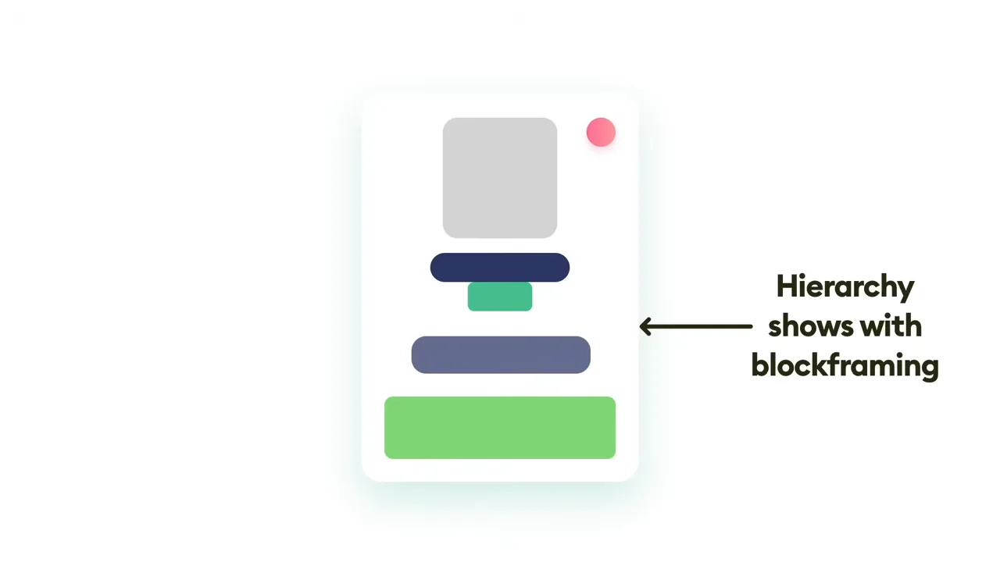
강좌는 접근성 기준 'AA'에 맞춰 화면을 만들어요. 고대비 전용 버전은 다루지 않지만, 그것도 사람마다 맞춰 줄 수 있는 선택지라고 짚어요.
그림자: 색과 깊이
연습판은 휴대폰 크기가 아니어도 되는 빈 프레임이에요. 배경은 일부러 다루기 까다로운 옅은 노랑으로 칠해요. 색상표의 왼쪽 위 사분면, 그러니까 채도가 낮고 밝은 영역에서 골라요. 제목 글자는 Plus Jakarta Sans 44 엑스트라볼드이고, 색은 배경색에서 HSB(Hue, Saturation, Brightness)의 밝기만 8로 내려요. 20을 넘기지 않으면 돼요. 카드는 좌우 32 여백, 모서리 16이에요. 처음에는 모서리 둥글기를 32 넘게 주지 말라고 해요.
그림자를 만드는 두 가지 방법
피그마에서 효과를 추가하면 기본 드롭 섀도가 붙는데, 이대로는 밋밋해요. 발표자는 값을 이렇게 바꿔요.
- 색은 배경을 스포이트로 찍은 뒤 밝기를 10 낮춰요.
- Y는 16, 흐림은 Y의 두 배 이상으로 줘요.
- 스프레드를 음수로 주면 그림자가 카드 밑으로 모여서 더 사실적이에요.
두 번째 방법은 그림자를 따로 그리는 거예요. 첫 카드 그림자 색을 찍어 새 사각형을 칠하고, 드롭 섀도 대신 레이어 블러를 걸어요. 100은 너무 강해서 40으로 줄여요. 이 사각형을 레이어 목록과 화면 양쪽에서 카드 아래로 보내면, 카드 아래쪽에만 그림자가 생겨요. 아래 화면에서 선택된 두 번째 카드 밑에 얇게 보이는 사각형이 그 그림자 사각형이에요.
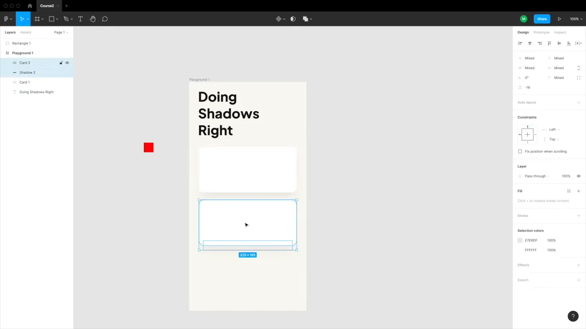
따로 그린 그림자의 장점은 눈으로 보며 고칠 수 있다는 점이에요. 더 진하게 하려면 불투명도를 올리거나 사각형을 높게 만들고, 모서리를 둥글리면 흐린 가장자리도 둥글어져요. 보통은 사각형을 카드 아래 변의 가운데에 두는 게 가장 자연스러워요. 발표자는 "코드로는 못 만든다"는 통념도 반박해요. 개발자가 카드 밑에 객체를 하나 더 두고 흐리게 하면 돼요. 조금 더 손이 갈 뿐이에요.
그림자가 겹치면 같은 평면에 있지 않아 보여요
그림자 흐림을 48, Y를 24로 키우고 카드를 두 열 격자로 늘어놓으면 문제가 드러나요. 위 카드의 그림자가 아래 카드 위로 떨어져요. 아래 화면 오른쪽 격자에서 카드 사이가 뿌옇게 보이는 게 그 상태예요.
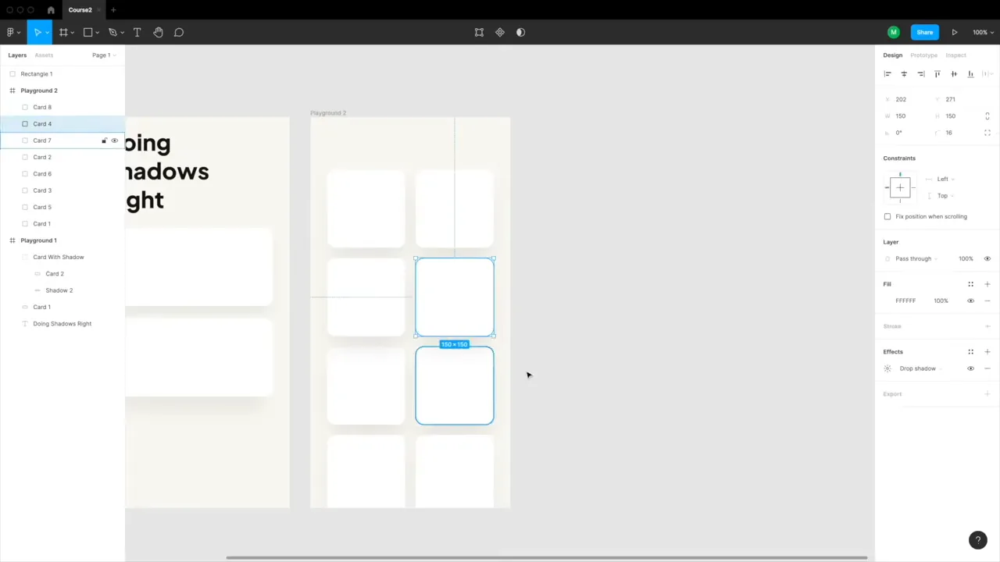
흐림이 큰 그림자는 큰 물체 하나에 시선을 모을 때 좋아요. 작은 물체가 여러 개면 작은 그림자를 써요.
배경을 바꾸면 그림자 색도 바꿔요
연습판을 복제해 배경을 초록, 파랑, 보라, 분홍으로 바꿔 봐요. 그대로 두면 노란 배경용 그림자와 글자가 새 배경과 따로 놀아요. 해결법은 배경 색의 색상(Hue) 값을 복사해서 글자 색, 카드의 드롭 섀도 색, 블러 사각형 색에 붙여 넣는 거예요. 아래 화면 오른쪽 색상 창의 HSB 칸에 266, 4, 8이 보여요. 보라 배경의 색상 266을 글자에 붙이고, 채도 4와 밝기 8은 그대로 둔 값이에요.
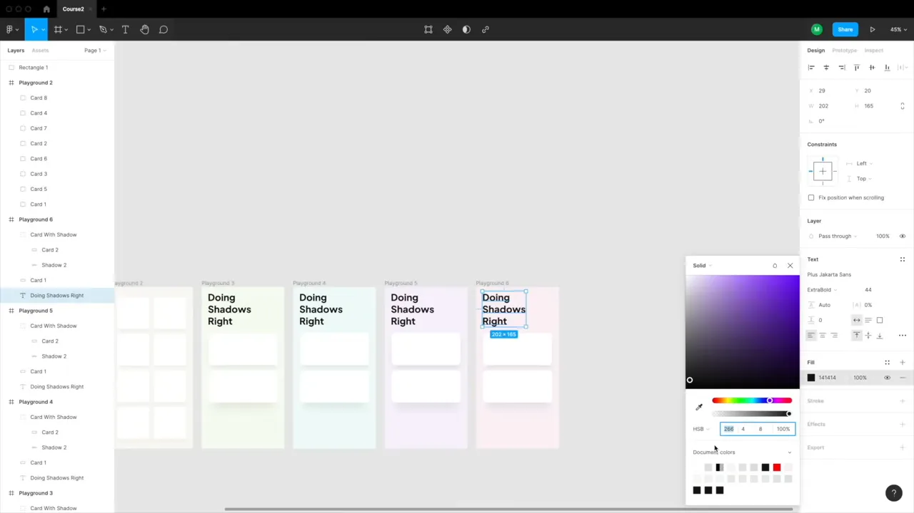
전체 배경처럼 전역 값을 바꾸면 그 위에 떨어지는 그림자도 다시 맞춰야 해요. 이 스타일에서는 아주 어두운 배경은 피해요.
큰 그림자는 한 화면에 하나만
마지막 연습은 깊이의 위계예요. 큰 카드 하나에 블러 80의 그림자를 주면 사용자 쪽으로 떠오른 것처럼 보여요. 사람은 가까운 것에 먼저 눈이 가니 중요한 메시지에 어울려요. 같은 카드를 블러 40으로 바꾸면 뒤로 물러나 보여요. 아래 화면의 Playground 7(큰 카드 하나)과 Playground 8(작은 카드 세 장)을 비교해 보세요. 오른쪽 패널에 레이어 블러 40이 떠 있어요.
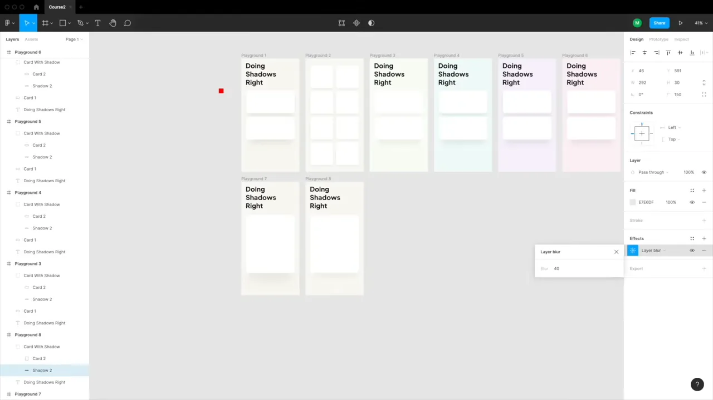
보다가 뭔가 어색하면 불투명도, 흐림, 블러 사각형 높이를 하나씩 조정해요. 정답 수치보다 눈으로 맞추는 과정이 더 중요하다고 해요.
이너 섀도, 그라디언트, 버튼 한 쌍
이너 섀도 두 겹으로 입체감 내기
배경을 하늘색으로 바꾸고, 카드에 색조가 아주 가까운 두 색으로 대각선 그라디언트를 줘요. 두 색이 멀수록 그라디언트가 지저분해져요. 모서리는 32로 키우되 대부분의 디자인에서 그 이상은 피해요.
여기에 이너 섀도를 두 개 겹쳐요. 첫째는 X·Y −8, 흐림 16의 어두운 그림자로, 색은 그라디언트에서 가장 어두운 아래쪽을 찍어요. 둘째는 X·Y +8, 흐림 16의 흰 그림자예요. 효과를 더 세게 하고 싶으면 −16과 흐림 32처럼 두 배로 늘려요. 아래 화면 왼쪽이 이렇게 만든 파란 카드이고, 오른쪽은 같은 효과를 흰 카드에 옮긴 판이에요.
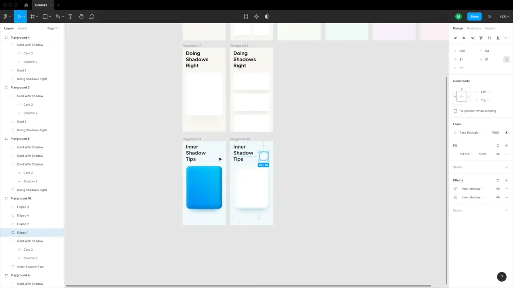
안쪽 그림자가 이미 있으면 바깥 그림자는 더 옅게 줘요. 그림자 사각형 너비를 카드 모서리가 시작되는 지점까지 줄이면 그림자가 카드 밑으로 숨어요. 장식용 공에 그림자까지 주면 과해요. 효과를 한 객체, 한 화면에 너무 많이 쓰지 않는 것이 이 장 전체의 원칙이에요.
색 감각을 숫자로 바꿔 보기
어울리는 색을 고르는 감은 경험에서 나오지만, 숫자로 패턴을 찾아볼 수 있어요. 카드 색, 위쪽 하이라이트, 아래쪽 그림자를 각각 사각형으로 뽑아 HSB 값을 옆에 적어요.
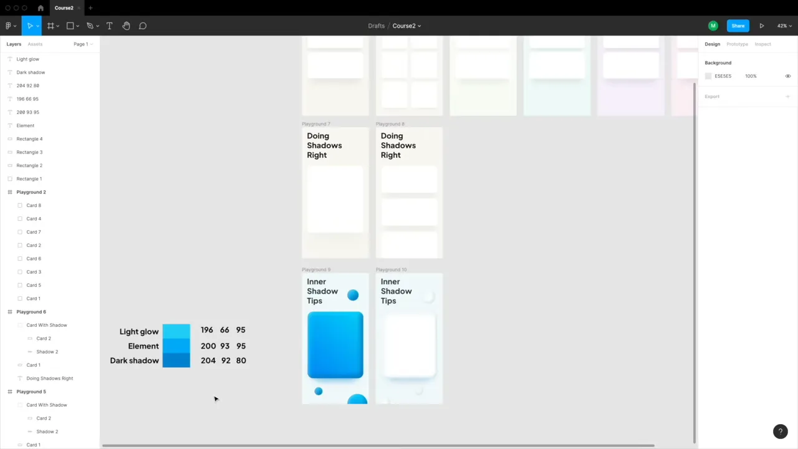
정리하면 이래요. 색조 차이는 3~5가 가장 좋고 그 이상은 피해요. 어두운 그림자는 채도는 거의 그대로, 밝기만 15쯤 내려요. 밝은 하이라이트는 밝기가 이미 높으니 채도를 낮춰서 밝게 만들어요. 발표자는 다음으로 넘어가기 전에 주황이나 초록으로 같은 계산을 해 보라고 권해요.
그라디언트는 티가 안 날 만큼만
자연의 모든 것이 그라디언트라서, 버튼에 그라디언트를 주면 더 자연스럽게 보인다고 해요. 규칙은 세 가지예요. 두 색의 색조를 가깝게 두고, 대각선으로 놓고, 어두운 색이 아래(또는 왼쪽 아래)로 가게 해요. 색조 차이는 파랑에서 20~30, 주황에서 10~20이 적당해요. 20보다 작으면 그라디언트가 아예 안 보일 수 있어요.
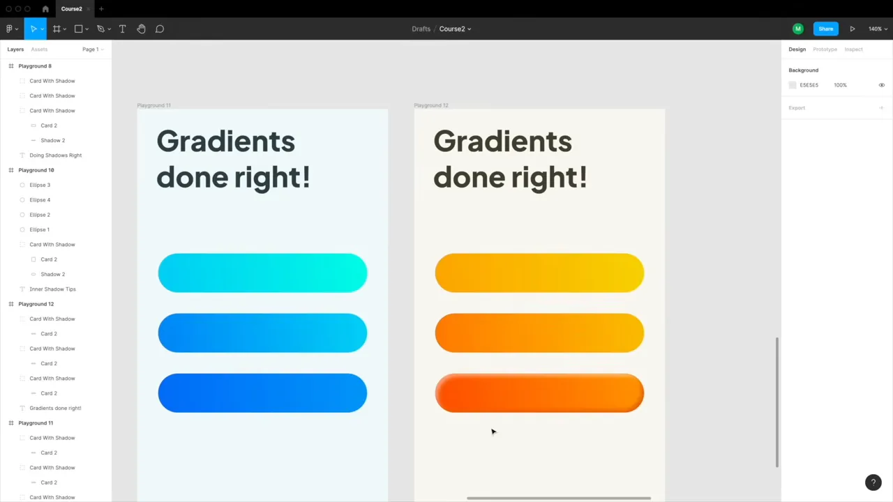
서로 먼 색을 일부러 섞는 브루탈리즘식 그라디언트도 있지만, 잘 해내기가 무척 어렵다고 해요. 블렌딩 모드도 되도록 쓰지 않아요.
주 버튼과 보조 버튼 한 쌍
한 화면에 강한 버튼이 세 개 있을 일은 없어요. 주 버튼 하나에 그림자를 주고, 보조 버튼은 그 그림자에서 색을 가져와요.
- 주 버튼에 드롭 섀도를 줘요 — 그라디언트의 가장 어두운 색을 찍고 밝기를 20 내려요(95→75). Y 12, 흐림 24, 스프레드 −8, 불투명도 50%예요.
- 버튼을 복제해 32 아래에 놓고 그림자를 지워요 — 그림자는 주인공에게만 줘요.
- 채우기를 단색으로 바꾸고, 주 버튼 그림자가 시작되는 지점을 스포이트로 찍어요 주 그라디언트와 어울리는 채도 낮은 색이 나와요
- 보조 버튼 글자는 진하게 해요 — 버튼 테두리가 안 보이는 사람도 진한 글자는 보고 링크라는 걸 알아요.
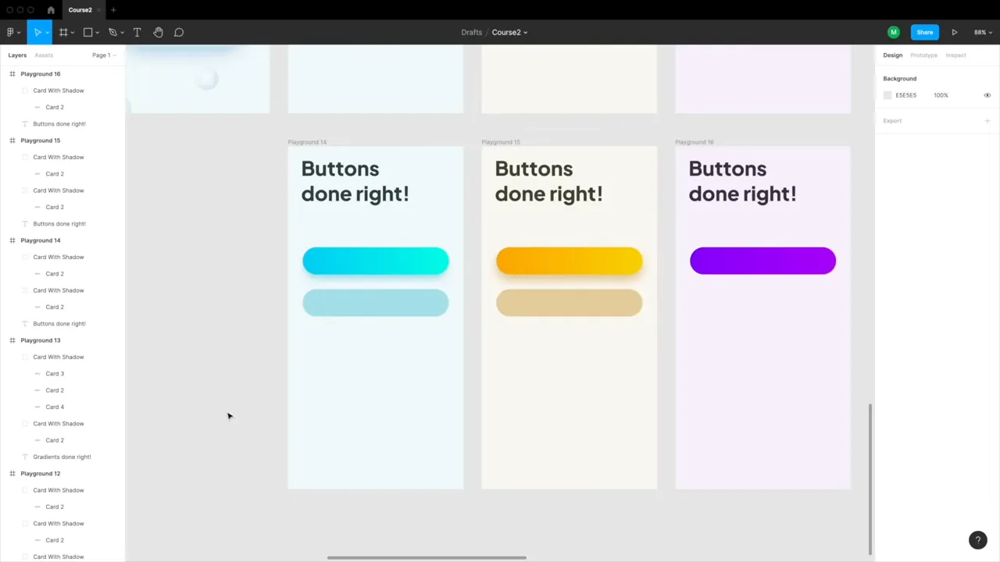
연습법도 알려 줘요. 드리블에서 인기 있는 작품을 하나 골라, 화면 전체가 아니라 카드나 버튼 하나만 따라 만들어 봐요. 인기 있는 작품은 그림자와 그라디언트가 대체로 잘 되어 있어요. 원본 옆에 두고 Y 값부터 올리고 흐림을 늘리다 보면 비슷한 지점을 찾게 돼요. 매일 해도 시간이 얼마 안 들어서, 나중에는 '채도 +20, 밝기 −20' 같은 규칙을 외우지 않아도 손이 먼저 가요.
이 장에서 나온 수치를 한곳에 모으면 이래요.
| 효과 | 영상에서 쓴 값 | 함께 지킬 것 |
|---|---|---|
| 카드 드롭 섀도 | Y 16, 흐림 32 이상, 스프레드 음수 | 색은 배경에서 밝기 −10 |
| 따로 그린 그림자 | 레이어 블러 40 (큰 카드는 80) | 카드 아래 변 가운데에 숨겨요 |
| 큰 카드 이너 섀도 | 어둡게 −8/−8 흐림 16, 희게 +8/+8 흐림 16 | 세게 하려면 두 배 |
| 버튼 이너 섀도 | ±4, 흐림 8 | 흰 쪽 불투명도 50% 이하 |
| 버튼 드롭 섀도 | Y 12, 흐림 24, 스프레드 −8, 불투명도 50% | 색은 버튼 가장 어두운 색에서 밝기 −20 |
| 그라디언트 | 색조 차이 파랑 20~30, 주황 10~20 | 어두운 색이 아래 |
| 하이라이트·그림자 색 | 색조 ±3~5, 그림자 밝기 −15 | 하이라이트는 채도를 낮춰요 |
마지막으로 다시 강조해요. 효과가 좋아 보이려면 옅어야 해요. 아주 어둡거나 너무 흐린 그림자, 먼 색끼리의 그라디언트, 겹치는 그림자는 모두 피해요.
버튼·폼·토글 같은 기본 요소
이 장은 앱 화면에 들어갈 기본 요소를 한 장의 큰 프레임에 모아 만들어요. 디자인 시스템의 진짜 컴포넌트나 변형(variant)은 강좌 범위 밖이라, 속성 복사·붙여넣기만으로 일관성을 지키는 가장 쉬운 방법을 써요.
버튼 라벨은 W 한 글자로 재요
버튼 높이는 44가 최소이고, 50이나 60도 괜찮아요. 60을 넘으면 너무 커요. 발표자는 크고 누르고 싶은 버튼을 좋아해서 거의 54~60을 써요. 라벨 크기는 버튼 높이의 3분의 1쯤에서 시작해요. 그다음 확인하는 방법이 독특해요. 고른 글꼴 크기로 대문자 W를 만들어 90도 눕힌 뒤, 글자 위와 아래에 하나씩 들어가는지 봐요. 기준은 어센더가 아니라 대문자 높이예요. 양옆에는 W가 두 개씩 들어가면 좋고, 하나는 최소선이에요.
글자가 버튼 세로 가운데에 오는지는 위아래에 같은 크기의 사각형을 놓고 확인해요. 글꼴마다 그려지는 위치가 달라서 정해진 규칙이 없어요. 1px 어긋나면 글자 크기를 1 줄이거나 늘려 맞춰요. 휴대폰 앱의 주 버튼은 대개 화면 너비 대부분을 차지해서 300~320 폭이면 거의 모든 라벨이 들어가요.
오른쪽 끝에 원과 화살표(셰브런)를 넣으면 행동 유도가 강해져요. 원은 위, 오른쪽, 아래에서 똑같이 4만큼 띄워요. 화살표는 버튼 색에서 밝기를 크게 내린 거의 검은색이고, 무게 중심이 오른쪽에 쏠려 있어서 손으로 조금 옮겨 시각적인 가운데에 맞춰요. 선 굵기는 라벨의 't' 획 굵기와 비슷하게 2.5~3으로 맞추면 좋아요.
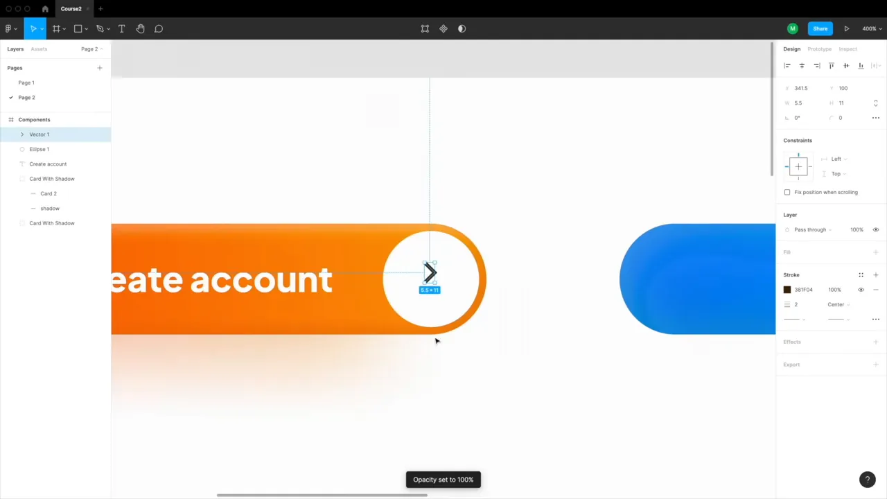
하이 피델리티라고 버튼에 효과를 다 얹을 필요는 없어요. 단색이어도 색이 선명하면 주 버튼으로 충분해요. 다만 주 버튼에 너무 은은한 색은 피해요. 모서리는 4~8처럼 작게 줘도 되지만, 완전히 각진 모서리는 덜 친근해 보여요.
보조 버튼은 한 단계씩 약하게
주 버튼을 복제해 효과와 그라디언트를 지우고, 위 버튼 그림자의 옅은 파랑을 찍어 칠해요. 글자는 진한 파랑으로 바꾸고 대비가 모자라면 밝기를 더 내려요. 아래 화면 오른쪽의 'Already have one? Log in!'처럼 설명 부분은 미디엄, 행동 부분만 굵게 쓰면 버튼이 덜 무거워져서 주 버튼과 덜 다퉈요.
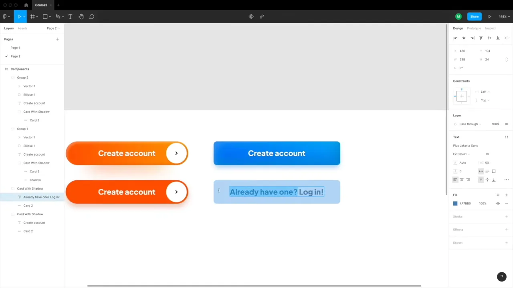
보조 버튼 안 글자 상자는 양옆 24 사각형에 맞춰 늘려 둬요. 글이 길어졌을 때 어디까지 들어가는지 알 수 있어서, 넘치면 문구를 줄이는 게 낫다고 판단할 수 있어요. 취소 버튼처럼 작은 버튼도 W 두 개 규칙으로 너비를 정해요.
폼 필드는 버튼보다 낮게
많은 사람이 폼 필드와 버튼을 같은 높이로 만들지만, 발표자는 반대해요. 버튼은 폼의 마지막 행동이라 더 커야 해요. 필드는 320×44에서 시작하고, 흰 바탕에 2pt 테두리를 줘요. 1pt보다 잘 보이고 소비자용 앱의 경쾌한 느낌에도 맞아요. 라벨은 미디엄 14로 필드에서 8 떨어뜨려요.
아래 화면은 필드를 버튼과 같은 60으로 키웠을 때예요. 파란 버튼이 필드 위에 겹쳐 보이고, 비율이 어색해요. 작은 단계에서 마지막 확인 단계로 커지는 흐름이 사라져요.

드롭다운, 토글, 체크박스
드롭다운은 필드 오른쪽에 도우미 사각형을 두고, 그 안에 세 변이 같은 삼각형을 넣어요. 색은 필드 테두리보다 조금 진하게 해요. 선택된 값(Estonia)은 굵게, 라벨보다 진하게 써요. 그림자로 테두리를 대신한 '떠 있는 필드'도 가능하지만, 접근성이 떨어지고 글을 쓰는 칸이 떠 있는 게 직관에 어긋나서 대개는 테두리로 돌아가요.
토글은 높이 50, 안쪽 원은 사방 4 이상 띄워요. 너비는 안쪽 원을 하나 더 복제해 반대쪽 끝에 놓았을 때 두 원이 살짝 겹치는 정도면 맞아요. 켜진 상태는 버튼의 속성을 복사해 오되 바깥 그림자와 흰 이너 섀도는 빼고 아래쪽 어두운 이너 섀도(−4, 흐림 8)만 남겨요. 체크 표시를 그려 넣으면 밋밋한 토글과 달라져요.
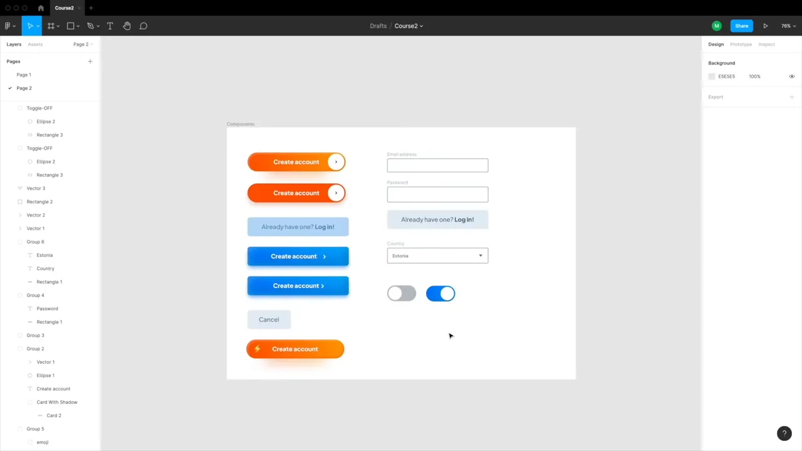
체크박스는 라벨까지 눌러도 되니 40으로 줄여도 되는 예외예요. 라벨과의 간격은 16이에요. 체크 표시는 두 선이 만나는 아래쪽이 무거워서, 자동 정렬보다 눈으로 가운데를 맞춰요. 체크박스나 글자에 그림자를 주지 말라는 말을 여러 번 해요. 폼을 채울 때만 보는 요소에 복잡함을 더할 뿐이에요.
탭, 라디오 버튼, 슬라이더, 그래프
두 칸짜리 탭은 높이 50 사각형 두 개를 붙이고 안쪽 모서리만 0으로 만들어요. iOS에서는 이런 탭 묶음을 세그먼티드 컨트롤이라고 불러요. 세 칸이면 가운데 칸은 네 모서리가 모두 각져요. 테두리는 2.5이고, 색은 두 칸이 만나는 지점의 밝은 쪽 그라디언트에서 찍어요.
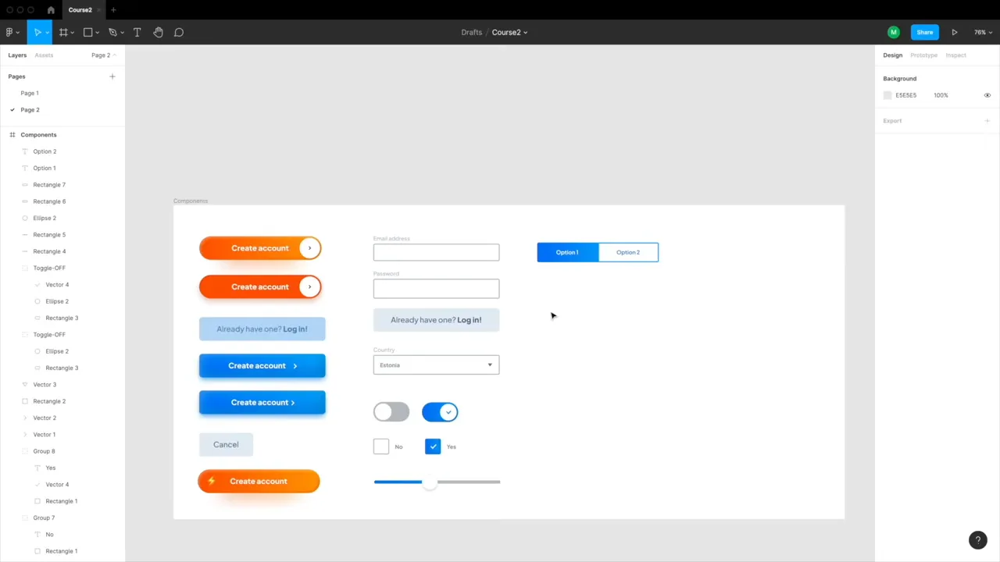
선택되지 않은 탭 밑에도 밑줄을 하나 더 두고 불투명도만 0으로 해 두면, 나중에 상태를 바꿔 그릴 때 편해요. 밑줄 아래에 같은 색에서 투명으로 사라지는 15% 그라디언트를 깔면 은은한 빛이 생겨요. 라디오 버튼은 체크박스 모서리를 끝까지 둥글려 만들고, 켜진 점은 사방 8 안쪽으로 줄여요.
슬라이더는 높이 8의 가는 막대에 꺼진 토글 속성을 붙이고, 손잡이는 40 원에 옅은 그림자를 줘요. 그래프는 둥근 곡선 대신 각진 선을 써요. 실제 그래프는 대부분 그렇게 생겼어요. 선 굵기는 5로 두껍게 하고, 선을 복제해 닫힌 도형으로 만든 뒤 아래로 사라지는 그라디언트를 채우면 덜 지루해 보여요.
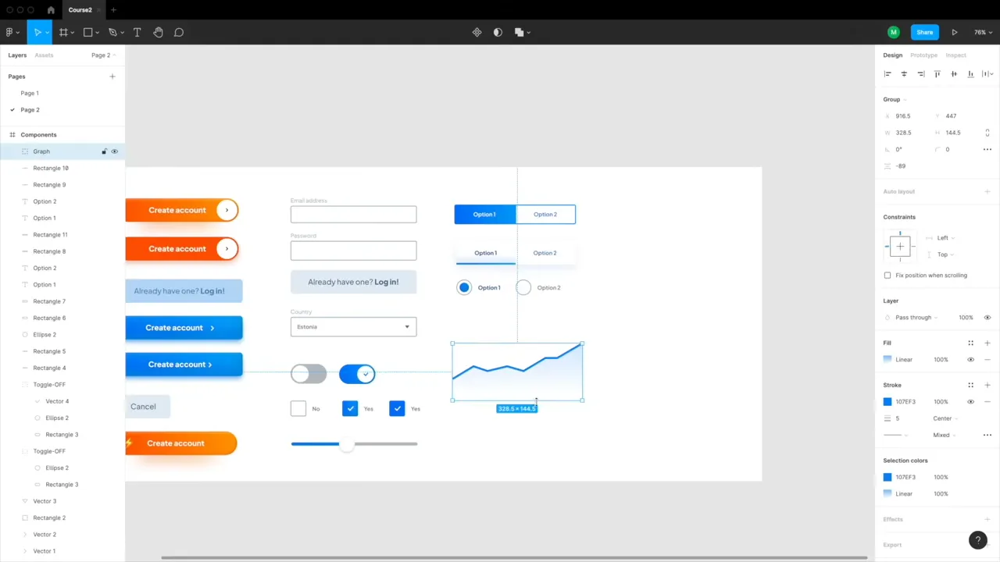
로그인·회원가입 화면
이제 첫 강좌에서 만든 유기농 식료품 앱 Organic Shops의 화면을 다시 그려요. 피그마에 iPhone 12 프레임이 없어서 390×844를 직접 입력해요. 좌우 여백은 첫 강좌처럼 32를 지켜요.
폼 필드와 버튼부터
폼 필드는 높이 50, 모서리 4, 흰 바탕에 앱의 초록과 어울리는 옅은 갈색 테두리예요. 여기에 드롭 섀도 대신 이너 섀도를 줘요. 그림자를 아래에서 올라오게 뒤집으면 필드 안 글자가 놓일 바닥선이 생기고, 무언가를 넣을 수 있는 칸이라는 깊이감도 생겨요. 색은 테두리에서 찍고 불투명도를 크게 낮춰요. 이너 섀도를 줬다면 바깥 그림자는 더하지 않아요. 아래 가장자리가 흐려 보여요.
- 플레이스홀더: 미디엄 이탤릭 14, 테두리 색 계열로 옅게. 왼쪽 16 사각형에 맞춰요.
- 라벨: 더 굵게, 밝기 40 이하로 진하게. 필드와 8 간격이에요.
- 라벨 글자 상자는 필드 폭만큼 늘려 둬서 긴 문구에도 안 깨지게 해요.
드리블용 시안은 글자를 아주 작게 쓰곤 하지만, 이 강좌는 실제로 쓸 수 있는 디자인이 목표라 14를 지켜요.
버튼은 요소 모음에서 둥근 버튼을 가져와 폭을 늘려요. 앱의 주 색인 초록은 가장 중요한 순간을 위해 남겨 두고, 로그인 버튼은 테두리 색의 밝기를 거의 검정까지 내린 어두운 갈색으로 칠해요. 주황 그림자는 지우고 버튼 색 계열로 다시 맞춰요. 회원가입 버튼은 로그인 버튼 그림자가 시작되는 지점을 찍어 만든 보조 버튼이고, 글자색은 주 버튼 색을 가져와요. 순수한 검정 글자는 너무 튀어서 피해요.
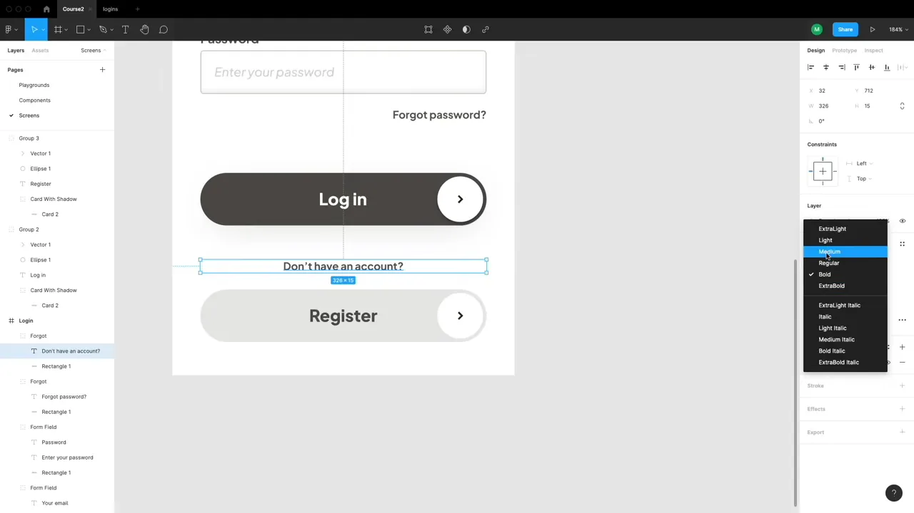
두 번째 판에서는 안내 글을 버튼 안으로 옮겨 'Don't have an account? Register!'로 써요. 버튼 사이는 24 이상 띄워야 손가락으로 잘못 누르지 않아요. 위 버튼의 그림자가 아래 버튼에 떨어지면 그림자를 줄여요. 포트폴리오용이라면 글자 위치에 784.3 같은 소수점 값을 써서 정확히 가운데에 맞춰도 되지만, 실제로 코딩할 화면에서는 소수점을 쓰지 않아요.
회원가입 화면
로그인 화면을 복제해 위쪽에 32 크기의 'Create a free account' 제목을 넣고, 첫 글자를 왼쪽 32 사각형에 눈으로 맞춰요. 제목 옆에는 가게 성격에 맞는 아이콘(여기서는 잎)을 붙여요. 서핑 가게라면 작은 서핑보드, 자전거 가게라면 바퀴를 쓰면 돼요. 뒤로 가기 화살표는 44×44 투명 사각형 가운데에 놓아 누를 영역을 확보해요.
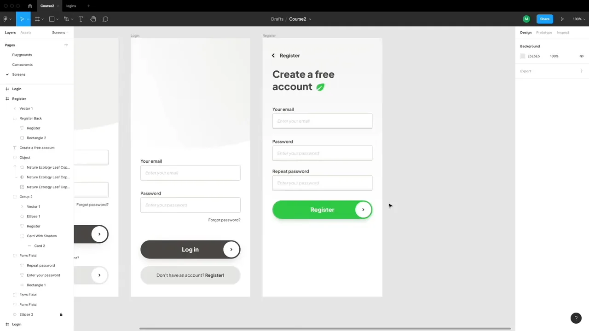
보조 색을 쓸 때는 색상표에서 발표자가 고른 것과 비슷한 영역에 있어야 해요. 너무 밝으면 안 돼요. 버튼의 원과 화살표 그림자도 새 초록의 색조로 바꿔요. 그림자에 초록 기운을 살짝 더하는 건 괜찮지만 지나치면 안 돼요. 또 하나의 규칙은, 버튼에 그림자를 준다면 버튼 자체는 단색이나 아주 옅은 그라디언트여야 한다는 거예요.
기능을 다 놓은 다음에 장식을 더해요
발표자는 언제나 필요한 기능 요소부터 놓고, 장식은 그다음이라고 강조해요. 미리 잘라 둔 이미지를 붙여요. 초록 그림자를 드리운 잎, 그림자 없는 사과, 같은 잎을 흐리게 하고 돌린 것이에요. 흐린 객체는 사진의 보케처럼 깊이를 더해요. 흐림을 끄면 화면이 확 밋밋해져요.
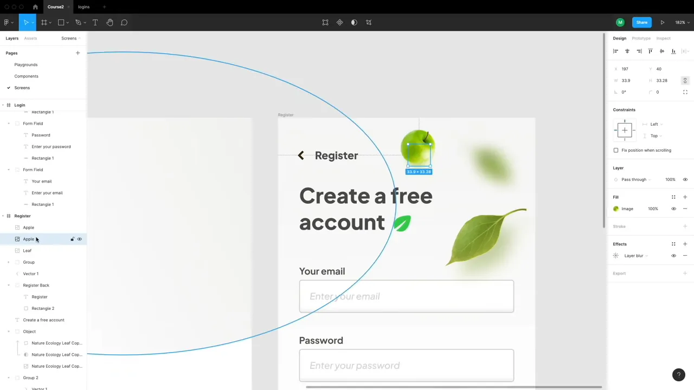
로그인 화면에는 로고가 찍힌 쇼핑백을 가운데 두고 사과, 고추, 흐린 당근, 잎을 띄워요. 장식에는 몇 가지 규칙이 있어요.
- 일부 객체는 서로 겹치게 해서 깊이를 만들어요.
- 그림자는 모두 같은 방식, 같은 느낌으로 맞춰요. Y를 키우면 더 높이 떠 보여요.
- 흰 원 같은 배경 장식은 두세 개면 충분해요. 왼쪽과 오른쪽은 높이를 다르게 둬야 계획한 티가 안 나요.
- 초록 장식이 많으면 초록 버튼이 묻혀요. 이럴 땐 어두운 갈색 버튼이 더 잘 보여요.
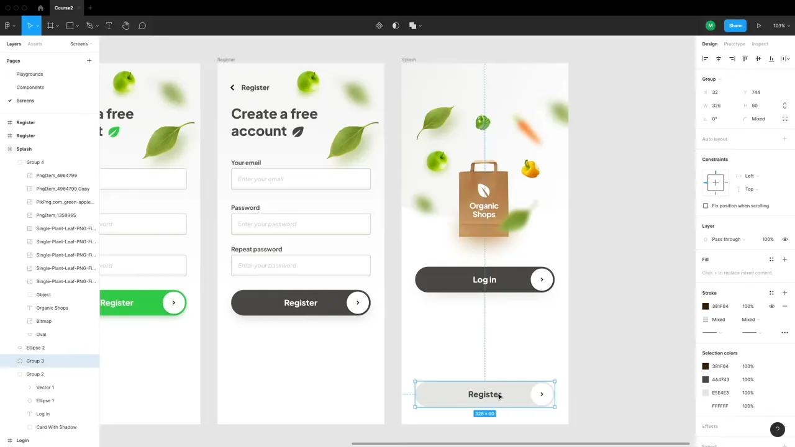
소셜 로그인과 '또는' 구분선
스플래시 화면에 세 번째 버튼으로 트위터 로그인을 더해요. 아이콘은 무료 소셜 아이콘 폰트에서 가져오고(트위터 새가 L 글자 자리에 들어 있어요), 색은 트위터의 실제 버튼을 캡처해 스포이트로 찍어요. 그림자도 같은 색, 불투명도 50%에서 시작해요. 새 아이콘은 높이만 한 정사각형을 위아래에 놓아 가운데를 확인하고, 글자와 8 간격을 둬요.
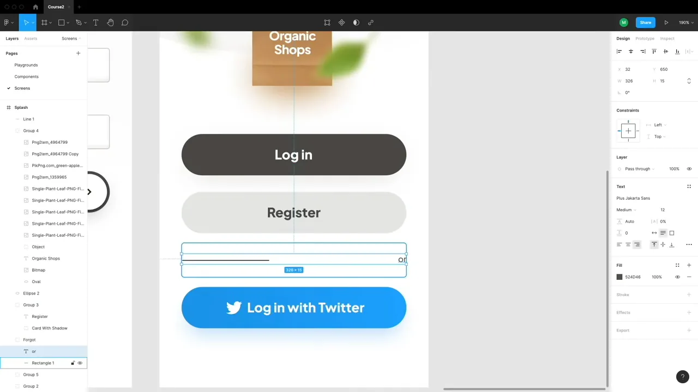
구분선 위아래로 24씩 띄워 소셜 로그인을 따로 묶어요. 화면이 빽빽한 앱이라면 16도 괜찮아요. 트위터 버튼에도 같은 색의 대각선 그라디언트를 줄 수 있는데, 밝기 차이는 10~20이면 충분해요. 가장 좋은 그라디언트는 그라디언트처럼 안 보이고 느낌만 나는 거예요.
화면끼리 이어지는 배경 도형
색이 진한 배경도 하이 피델리티에 쓸 수 있어요. 회원가입 화면 위쪽에 초록 둥근 사각형을 깔고, 흐린 객체는 빼요. 진한 초록 위에서는 흐린 잎이 지저분한 얼룩처럼 보이거든요. 모서리를 32로 둔 이유는 좌우 여백 32와 맞추기 위해서예요. 도형을 왼쪽 화면 밖에서 시작해 오른쪽 32에서 끝나는 알약 모양으로 바꾸면, 로그인 화면에서 반대 방향 도형과 이어질 수 있어요.
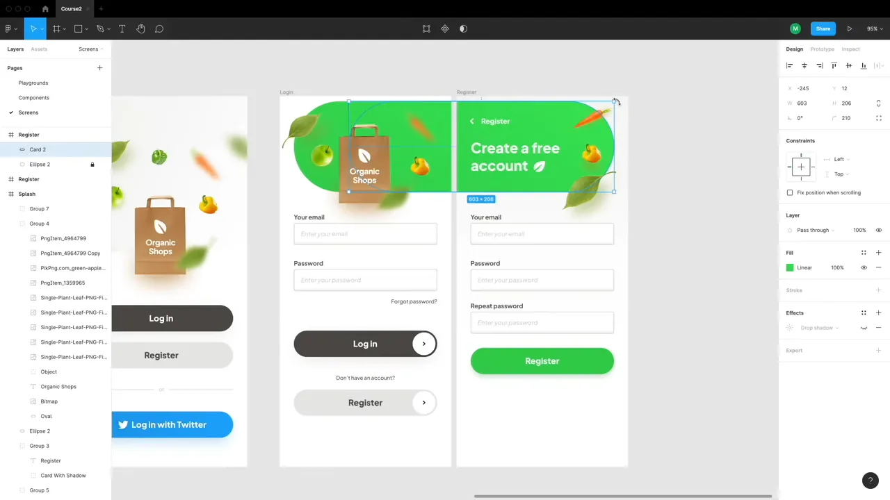
도형은 45도로 돌리거나 더 유기적인 모양으로 바꿔도 돼요. 처음에는 둥글기만 다른 사각형으로 시작하는 게 쉬워요. 이 모든 장식은 미적인 것 말고는 기능에 기여하지 않아요. 버튼과 폼 필드는 그대로 쓰기 쉽고 읽기 쉬워요. 그게 이 장의 핵심이에요.
목록·카드와 지도 화면
이 장은 짧은 개요예요. 첫 강좌에서 만든 목록·카드 화면을 가져와, 이미 고른 색과 단순한 객체·사진·그림자로 무엇을 더할 수 있는지 보여 줘요.
주 색은 아껴 쓰고, 그림자는 물건에서 색을 가져와요
앱의 주 색인 초록이 모든 곳에 있으면 촌스러워요. 초록은 행동 유도 버튼이나 강조 같은 가장 중요한 요소에만 쓰고, 상품마다 반복되는 '장바구니 담기' 버튼은 더 차분한 어두운 갈색으로 칠해요. 발표자는 갈색과 초록을 나란히 놓고 잘 어울린다는 걸 보여 줘요. 웃는 얼굴을 넣은 장바구니 아이콘처럼 장난스러운 시도도 두려워하지 말라고 해요.
목록 항목에는 접근성을 위해 테두리와 그림자를 둘 다 줬어요. 테두리를 꺼도 카드는 여전히 쓸 만해요. 카드 구조와 간격이 위계를 보여 주기 때문이에요. 잘라 낸 상품 아래에는 타원을 그려 블러를 걸면 사실적인 그림자가 생겨요.
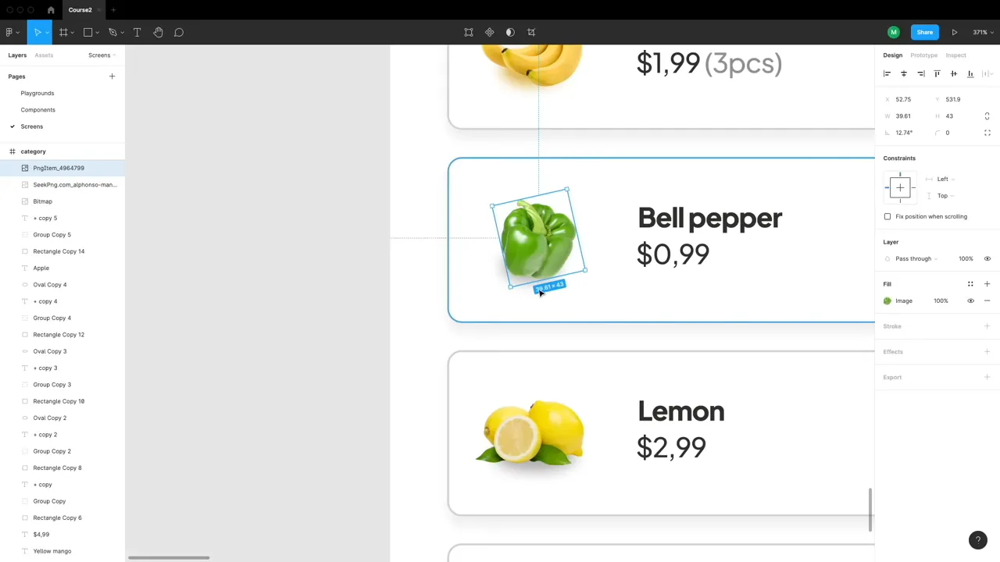
버튼을 그라디언트로 바꾸고 싶다면 같은 색을 양쪽 끝에 두고 밝기만 10~20, 채도는 10쯤 바꿔요. 카드 테두리 색은 폼 필드와 같은 색이에요. 색상표 왼쪽 위의 밝은 영역이어야 하고, 파란 앱이라면 색조만 옮기면 돼요. 이너 섀도와 테두리를 쓴 카드에 드롭 섀도까지 얹으면 흐릿하고 지저분해져요.
카드 안 이미지 크기 정하기
카드를 버튼, 글자, 사진 세 구역으로 나누고 각 구역에 카드의 기본 안쪽 여백을 줘요. 그다음 사진 구역의 양옆을 한 번 더 줄이면 이미지가 버튼 폭을 넘지 않는 최대 크기가 나와요. 사진이 정사각형에 가까우면 그 안에서 정사각형을 잡아요. 이미지는 중요하지만 너무 크면 레이아웃이 무너져요. 버튼 모서리는 카드 모서리와 맞춰서, 대각선 거리와 아래·좌우 거리가 같아 보이게 해요.
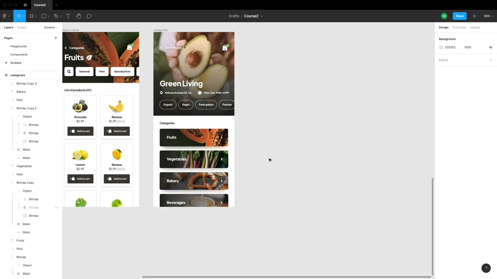
발표자는 이 카테고리 줄의 그림자는 오히려 과하다고 봐요. 한 객체에 그라디언트, 그림자, 이너 섀도, 빛을 다 얹지 말라는 거예요. 잘라 낸 상품을 카드 위로 살짝 튀어나오게 하는 것도 좋은 시도예요. 다만 매번 바나나를 잘라 낼 수는 없으니, 상품이 정해진 가게에 더 맞아요. 포트폴리오에서는 이런 잘라 낸 사진이 벡터만 다루는 게 아니라 픽셀도 다룰 줄 안다는 걸 보여 줘서 다른 지원자와 차이를 만들어요.
지도는 앱 색에 맞춰요
지도 화면에서 가장 중요한 일은 지도 색을 앱 스타일에 맞추는 거예요. 흔한 풀컬러 지도 대신 흑백이나 회색조 지도를 쓰거나, 지도 서비스에서 색을 직접 편집해요. 이미지 색조를 조금 바꾸는 방법도 있지만 손댄 티가 나면 안 돼요. 이미 차분한 지도라면 그대로 둬요.
지도를 덜 지루하게 만드는 방법으로, 바다(발트해) 위에 바다 색보다 채도가 조금 높은 큰 원을 올려 블러를 걸어요. 물 위에만 둬야 해요. 길 위에 두면 길을 가려서 지도 쓰기가 나빠져요.
배달 추적 화면
현재 위치(기사 위치)는 초록 원에 두꺼운 흰 테두리를 주고, 테두리에 초록 기운이 도는 그림자를 줘요. 어떤 지도 배경에서도 잘 보여요. 목적지는 메뉴에서 쓰던 핀 아이콘을 채운 모양으로 바꿔 더 어두운 초록으로 칠해요. 지도 위 두 점은 같은 색이면 안 돼요.
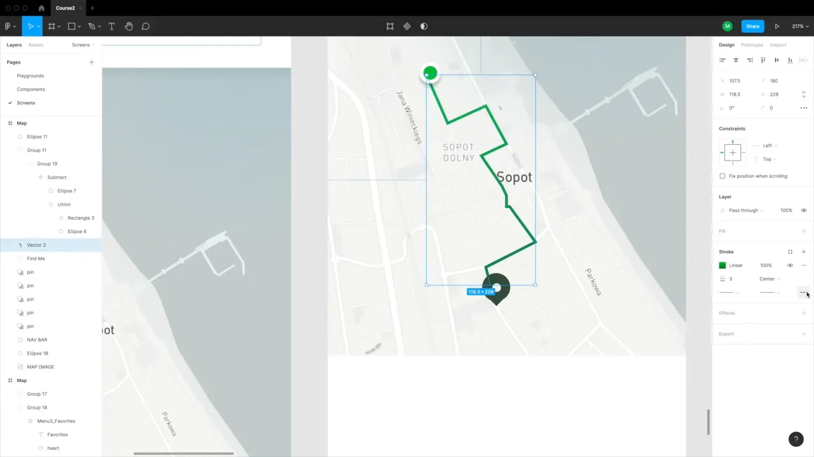
아래 카드에는 로그인 화면에서 만든 버튼, 필드 라벨, 제목을 가져와 재활용해요. 제목은 'Delivery in progress', 그 아래에 상태(On my way!)와 도착 예정 시각인 ETA(Estimated Time of Arrival) 7:32 PM을 크게 써요. 두 번째 열은 화면 가운데에 32 사각형을 놓고 그 오른쪽에 맞춰요.
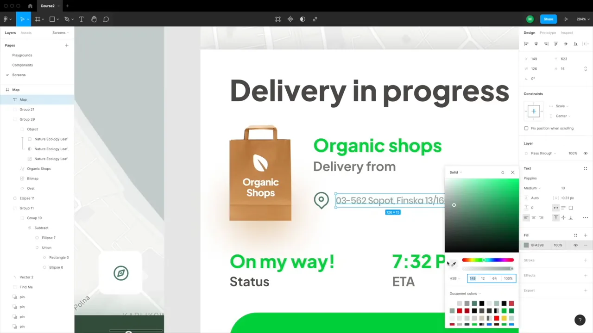
카드는 제목 덩어리, 로고가 있는 시각 덩어리, 나머지 글과 버튼으로 몇 개의 블록을 나눠요. 크기 10 글자는 탭 바 라벨 전용이라 14로 키워요. 디자인을 휴대폰으로 보내 글자가 읽히는지, 버튼이 눌리는지 꼭 확인하라고 해요. 카드 그림자는 흐림을 키우되 Y를 음수로 주지 않아요.
떠 있는 검색창
지도 위에 검색창만 띄우는 화면도 흔해요. 위치는 OS(Operating System) 도우미 요소의 상태 표시줄 영역을 피해 그 아래 영역 가운데에 둬요. 그림자는 기본 드롭 섀도 대신 검색창보다 작은 사각형을 지도 색에서 밝기 10 내려 칠하고 크게 흐려요. 배경이 없는 검색창이라 플레이스홀더 글자는 조금 더 굵고 진하게, 높이는 44보다 큰 50으로 해요.
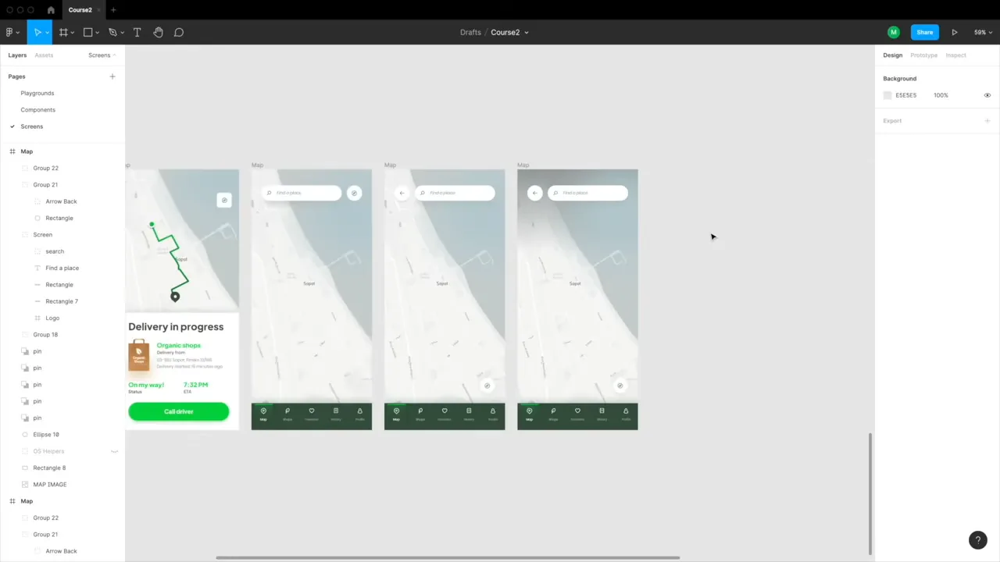
검색창 안 아이콘은 높이 50의 원 가운데에 두고 플레이스홀더를 원 가장자리에 붙이면 잘 맞아요. 8pt 격자를 쓴다면 지름 16의 원 안에 아이콘을 맞추면 돼요. 바다 같은 빈 공간이 없는 복잡한 지도라면 위쪽에 지도 색의 그라디언트 덮개를 깔아 아이콘을 잘 보이게 해요. 정리하면, 지도 자체는 차분하게 두고 할 일은 그 위 덮개에서 해요.
내비게이션: 햄버거 메뉴와 탭 바
발표자는 이 장을 이렇게 시작해요. 시각적으로 절대 복잡하게 만들면 안 되는 것 하나를 꼽으라면 내비게이션이에요. 내비게이션이 불분명하거나 읽기 어려우면 제품을 쓰기 어려워져요.
햄버거 메뉴
햄버거 메뉴는 가장 좋은 내비게이션은 아니라고 먼저 짚어요. 그래도 쓴다면, 메뉴 뒤 화면에 배경 블러 덮개를 깔아 메뉴를 돋보이게 해요. 배경 블러가 안 먹으면 레이어 불투명도가 100%인지, 채우기만 80%로 낮췄는지 확인해요. 메뉴 배경은 대각선 그라디언트로 바꾸고 밝은 색을 위, 어두운 색을 아래에 둬요. 배경이 어두워지면 글자와 아이콘은 흰색으로 바꿔요.
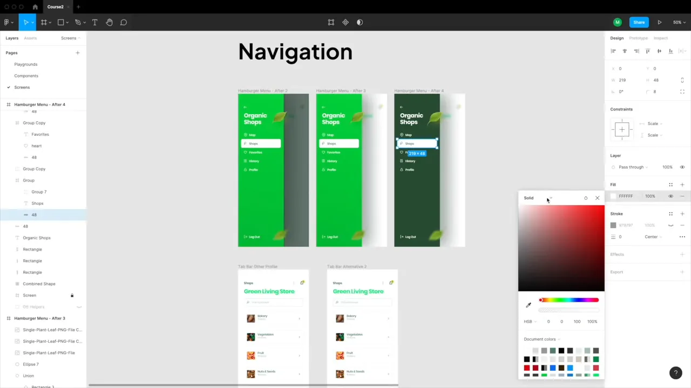
로그인 화면의 잎을 복사해 메뉴 가장자리에 살짝 겹쳐 둬요. 비트맵 이미지가 메뉴에 겹쳐 있으면 메뉴가 펼쳐질 때 애니메이션을 줄 수 있어요. 장식은 메뉴 항목에서 최대한 멀리 둬요. 메뉴 아래에는 사각형을 복제해 레이어 블러를 건 그림자를 깔아 깊이를 줘요.
선택 표시도 더 흥미롭게 만들 수 있어요. 왼쪽 끝에 너비 4의 선을 두고, 나머지는 같은 색에서 투명으로 사라지는 그라디언트(시작 불투명도 20%)로 바꿔요.
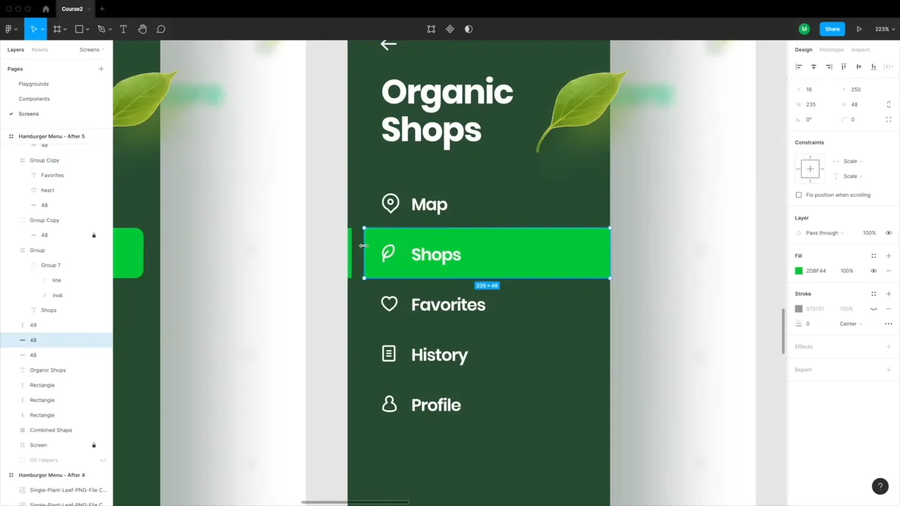
메뉴에 빈 공간이 많아도 고추나 당근을 더 넣고 싶은 마음은 참아요. 요소가 넘치는 디자인은 하이 피델리티가 아니라 우스꽝스러워 보여요.
탭 바: 모바일 앱의 기본 내비게이션
탭 바는 모바일 앱에서 가장 좋은 내비게이션이라고 해요. 첫 변형은 탭 바를 화면 끝에서 띄우는 거예요. 화면 여백은 32지만, 탭 바까지 32로 두면 스크롤할 때 카드들과 섞여 보여요. 그래서 좌우 16만 띄워 조금 더 넓게 두고, 모서리를 둥글리고, 그림자를 줘요. 흐림은 Y의 두 배로 둬요.
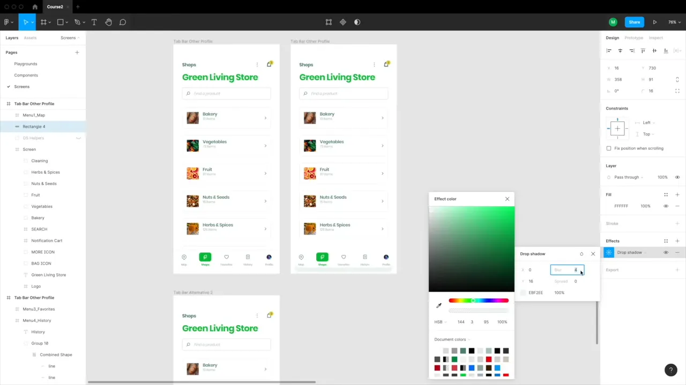
다른 시도들은 대부분 조건이 붙어요.
| 시도 | 영상의 판단 |
|---|---|
| 반투명 탭 바 + 배경 블러 | 사진 공유 앱처럼 이미지가 비쳐 보이면 좋지만, 흰 배경 앱에서는 거의 안 보여요. 투명도는 대체로 피해요. |
| 완전히 둥근 알약 모양 | 목록 카드의 둥근 모서리와 만나면 어색해서 덜 둥근 값으로 돌아가요. |
| 위쪽만 둥근 전체 폭 탭 바 | 흔하지만 최선은 아니에요. 배경 블러를 쓴다면 화면 밖으로 삐져나가지 않게 해요. |
| 이너 섀도로 만든 가짜 3D | 다시 유행하는 중이에요. 흰 그림자(4, 4, 흐림 8)와 어두운 그림자(−4, −4, 흐림 8)를 겹쳐요. 같은 효과를 다른 흰 사각형 전부에 복사하는 건 금물이에요. |
| 어두운 탭 바 | 선택된 칸 양옆에 아주 어두운 그라디언트를 세로로 두면 눌린 듯한 반입체가 돼요. 아이콘은 흰색으로 바꿔요. |
그림자 방향에 대한 당부도 있어요. 그림자를 더 잘 보이게 하려고 Y를 음수로 주는 사람이 많지만, 모든 그림자는 아래를 향해야 해요. Y는 0 이상으로 두고, 불투명도는 50%를 넘기지 않아요.
선택 상태는 색만으로 구분하지 않아요
선택된 탭을 원 모양으로 표시하는 판에서는, 아이콘 뒤에 원을 두고 그 아래에 같은 색 타원을 블러 처리해 둥근 그림자를 깔아요. 발표자는 이런 모양 차이가 접근성에도 좋다고 말해요. 색으로만 구분하면 못 알아보는 사람도 모양은 알아봐요.
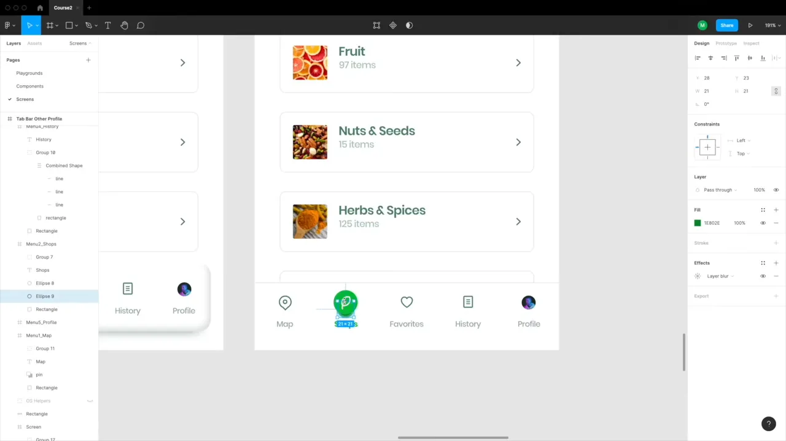
아이콘 위쪽에 짧은 선 하나만 둬도 선택 표시로 충분할 때가 많아요. 그 선을 아이콘보다 조금 넓게 줄이고 탭 바 가장자리에서 살짝 띄우면 더 잘 보여요. 선 아래에 알약 모양을 블러 처리해 탭 바 안에 가두면 은은한 빛이 생겨요.
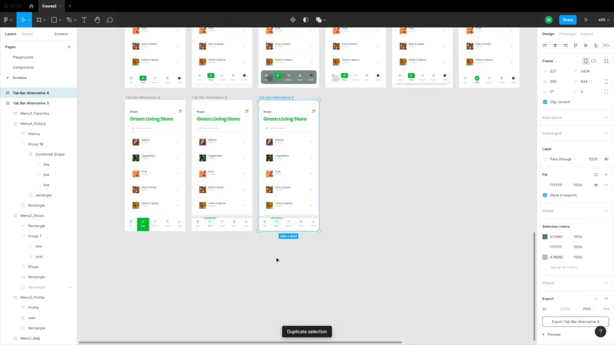
탭 바 위쪽 모서리를 둥글릴 때는 둥근 부분이 끝나는 곳이 콘텐츠와 겹치지 않게 해요. 스크롤할 때 둥근 모서리에서 둥근 모서리가 튀어나오는 것처럼 보여요. 아이콘 자체로 실험하기 전에 배경부터 바꿔 보라고 권해요. 화려하게 움직이는 내비게이션 시안은 보기엔 좋아도 쓰는 시간을 늘려서, 실제 제품에서는 잘 안 쓰여요.
상품 상세 화면과 여러 변형
상세 화면은 상품 페이지지만, 프로필처럼 하나에 집중하는 어떤 화면에도 응용할 수 있어요. 상품이 배경에서 잘려 나와 있다면(스케이트보드든 자전거든 아보카도든) 크게 놓아요. 사람들이 이 화면에서 찾는 게 바로 그 상품이에요.
상품 사진과 그림자 세 겹
배경 마스크를 초록으로 칠하고, 밝기 차이 10~20의 대각선 그라디언트를 줘요. 아보카도는 배경 밖으로 살짝 튀어나오게 해요. 그림자는 세 겹으로 만들어요.
- 사진을 복제해 레이어 블러 50쯤을 걸고 조금 아래로 내려요 상품과 색이 맞는 부드러운 그림자가 생겨요
- 바닥에 닿는 부분에 작은 타원을 그려요 — 상품 아래쪽의 어두운 색을 찍고 블러를 걸어, 상상 속 바닥에 닿는 진한 그림자를 만들어요.
- 타원들을 사진 아래로 보내고 묶어 둬요 — 그림자가 사진 위를 덮으면 안 돼요.
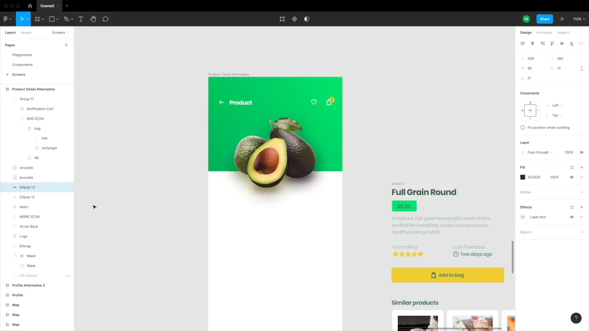
글자는 이미지와 맞아야 해요. 자전거 사진을 넣었으면 자전거 이름을 붙여요. 모든 화면에 같은 일반적인 제목을 쓰면 가짜처럼 보여요. 비슷한 상품 칸에는 사과, 피망, 당근처럼 서로 다른 상품을 넣어요. 자전거 가게라면 자전거만 늘어놓지 말고 헬멧이나 가방을 섞어야 진짜 가게처럼 보여요.
잎 장식을 더 얹어 보기도 하지만 결국 빼요. "디자인은 덜어 내는 것"이라는 말을 여기서 해요.
글꼴 하나 바꾸기가 가장 큰 차이
발표자는 글꼴을 Poppins에서 Plus Jakarta Sans로 바꿔요. 무료 글꼴 중 가장 나은 편이라고 보고, 잘라 낸 아보카도나 그림자보다 이 변화가 화면을 더 좋게 만든다고 말해요. 얇은 굵기는 피하고 미디엄을 기본으로, 상품명은 엑스트라볼드로 올려요. 사진에 색이 많으면 글자의 색기는 줄여요. 주 색의 기운은 남기되 더 어둡고 채도를 낮춰요.
카드 안 여백과 버튼 크기
두 번째 판에서는 초록 배경을 화면 전체로 늘리고, 그 위에 좌우 16 띄운 흰 카드를 깔아요. 카드 안 여백은 24예요. 발표자는 카드 안 여백에 몇 가지 기준을 둬요.
- 8은 가장 작은 요소끼리의 간격에만 써요.
- 큰 요소는 최소 16, 대부분 24가 가장 무난해요. 32를 써도 더 잘 읽혀요.
- 본문은 양쪽 정렬하지 말고 왼쪽 정렬로 자연스럽게 감싸요.
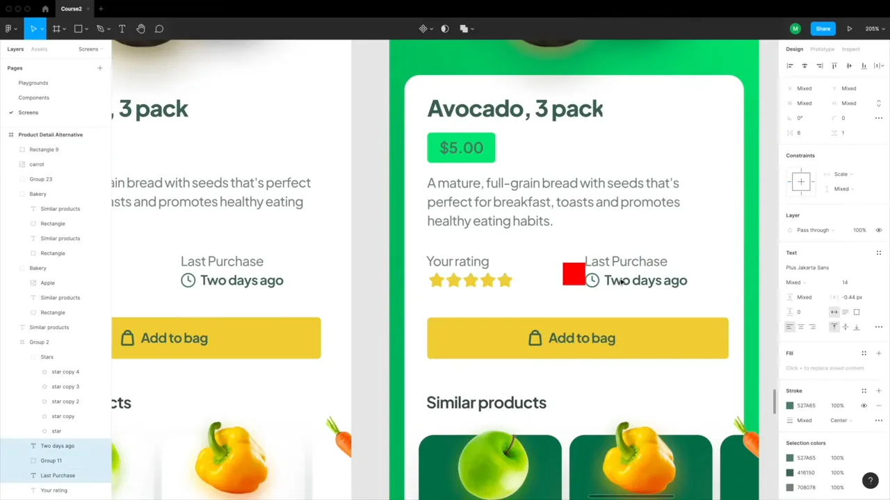
비슷한 상품 카드를 어둡게 하면 과일의 색 그림자가 더 살아나요. 어두운 카드에는 방사형 그라디언트(양쪽 불투명도 100%, 밝기 차이 20 이하)를 주고, 그림자는 빼요. 어두운 카드가 어두운 그림자를 드리우면 가장자리가 흐려져요.
버튼은 44에서 50으로 키워요. 발표자에게는 50이 대부분 버튼의 적정 높이예요. 원과 아이콘이 있는 버튼이라면 라벨이 버튼 높이 안에 세로로 세 번 들어갈 만큼이 적당하고, 버튼 글자는 16 밑으로 내리지 않아요.
같은 구조로 여러 변형 만들기
여기서부터는 정보 구조는 그대로 두고 생김새만 바꿔요. 배경을 흰색으로 바꾸고 상품 뒤에 반투명 원을 깔거나, 둥근 사각형을 45도 돌려 깔거나, 원에 초록 그라디언트를 주고 아이콘을 흰색으로 바꾸거나, 크기가 다른 원 두세 개를 흩어 놓아요. 원이 상품과 겹친다면 아보카도 두 개 사이 틈을 지나가게 해요. 가장자리에 살짝 닿기만 하면 어색해요.
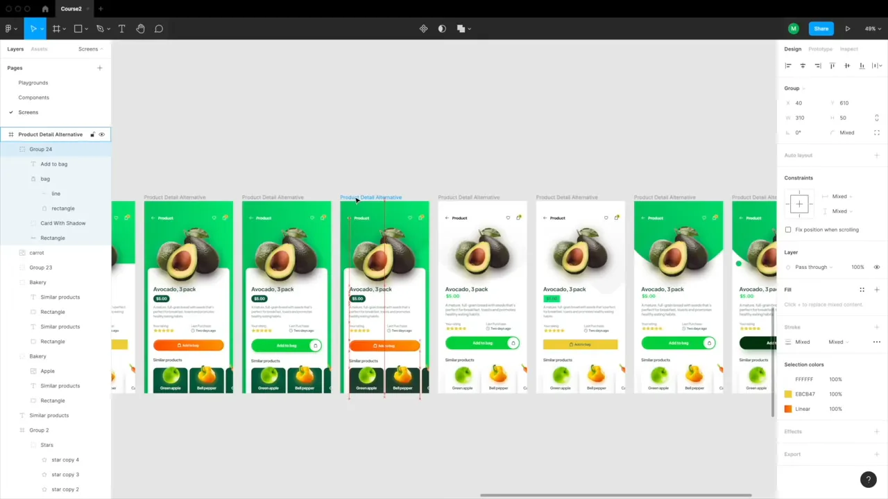
흰 배경 판처럼 여백이 넉넉하면 버튼도 크게, 글자도 크게 해요. 본문이 14라면 16으로 올리고, 14 밑으로는 내리지 않아요. 초록이 많은 화면에서는 버튼을 거의 검정(밝기 19)으로 바꾸면 바로 눈에 띄어요. 이때 그림자는 버튼을 복제해 밝기를 조금 올리고 블러를 건 것을 깔아요.
가장 미니멀한 판
마지막 판은 비슷한 상품을 빼고 화면 전체를 덮는 흰 카드(모서리 32, 그림자 Y 0)를 깔아요. 카드 뒤 초록 바닥에는 검정에서 투명으로 가는 그라디언트를 위쪽에 둬서 초록 방 안 초록 바닥에 상품이 놓인 듯한 입체감을 내요. 장바구니 버튼은 엄지가 닿는 화면 맨 아래로 내려요. 왼손잡이와 오른손잡이 모두에게 편한 자리예요.
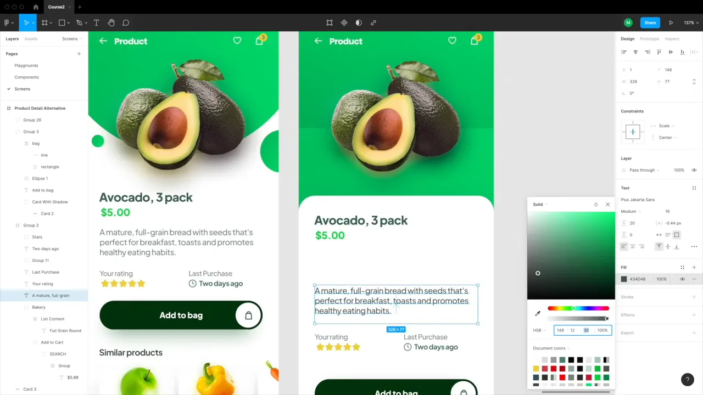
줄 간격은 황금비로 정해요. 글자 크기 16에 1.618을 곱한 값을 반올림해 쓰면 글자 크기에 잘 맞는 줄 간격이 나와요. 카테고리 칩(Superfood 같은)은 두 개면 충분해요. 이 장의 결론은, 첫 판이 마음에 들어도 복제해서 배경·덮개·그림자·틀을 바꾸거나 무언가를 빼 보라는 거예요. 좋은 아이디어는 많이 만들어 놓고 하나를 지워 볼 때 나오곤 해요.
팝업과 온보딩
'장바구니에 담겼어요' 팝업
먼저 상세 화면 옆에 팝업 카드를 따로 만들어요. 화면 위에서 만들면 내용에 가려서 배치하기 어려워요. 상품명은 크게, 그 아래 무슨 일이 일어났는지 알려 주는 짧은 설명을 둬요. 화면에 색이 많으니 글자는 채도와 밝기를 낮춰 더 어둡게 해요. 상품 이미지를 왼쪽에 넣으면 무게가 왼쪽으로 쏠리니, 두 줄 사이 간격을 넓히고 제목을 조금 굵게 해서 균형을 맞춰요.
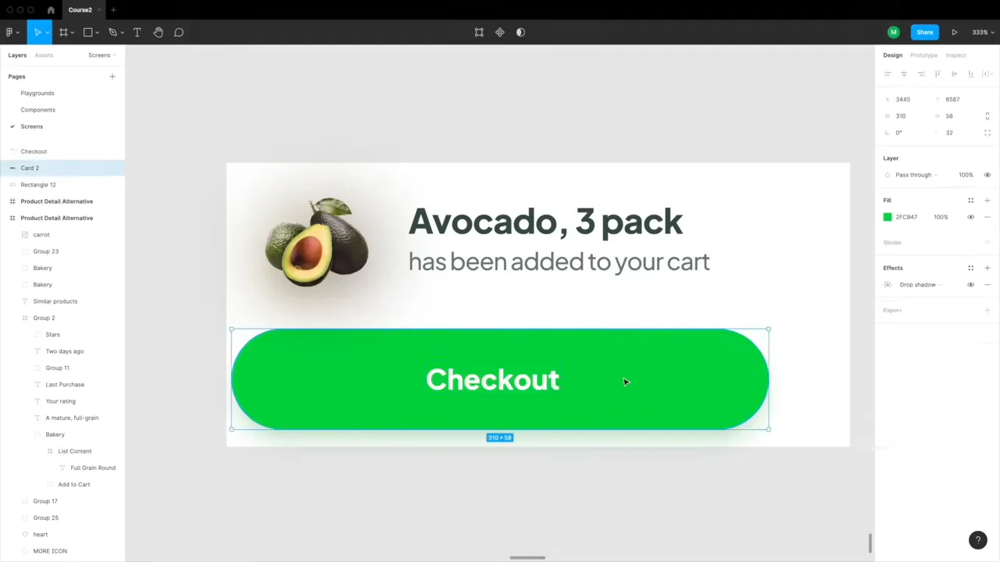
버튼 두 개가 똑같이 생기면 안 돼요. 하나는 주 버튼(결제), 하나는 눈에 띄게 약한 보조 버튼이어야 해요. 보조 버튼은 아주 옅고 채도 낮은 초록에 그림자 없이, 글자는 제목 색을 찍어 진하게 해요. 버튼 테두리가 안 보이는 사람에게는 그냥 글자 링크로 보여도 괜찮아요. 화면 여백이 32라면 카드 안은 24, 버튼 사이는 8에서 시작해요.
카드 위쪽 두 모서리만 32로 둥글리고 화면 아래에 붙여요. 이때 카드가 바로 위 '장바구니 담기' 버튼 끝에 딱 맞춰 끝나지 않고, 버튼을 살짝 덮게 두면 더 보기 좋아요. 포트폴리오용 시안에서 특히 중요한 디테일이에요.
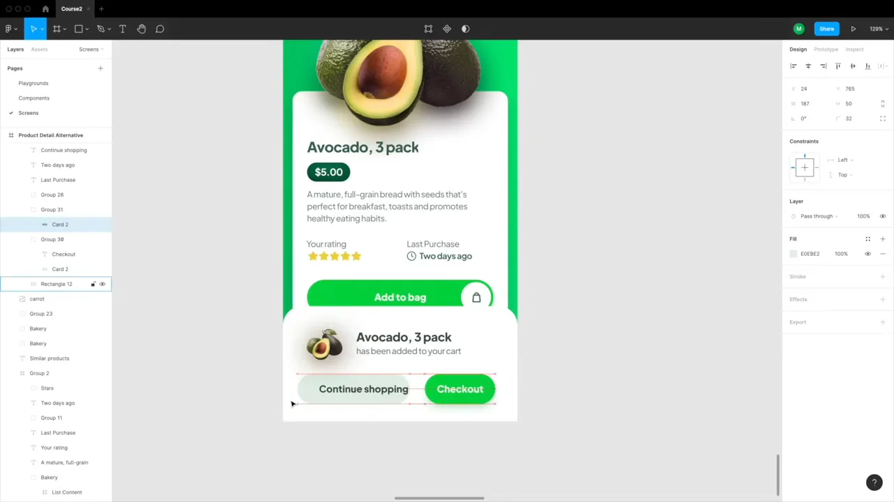
카드 뒤에는 거의 무채색의 아주 어두운 초록으로 아래에서 위로 투명해지는 그라디언트 덮개를 깔아 카드를 띄워요. 둥근 모서리 옆에 덮개가 빈 틈을 남기지 않게, 덮개는 둥근 부분이 시작하는 높이부터 시작해요.
글이 긴 버튼은 위아래로 쌓아요
첫 강좌에서 사람들이 가장 많이 막힌 문제가, 긴 글을 버튼에 억지로 넣으려고 글자를 줄이는 거였다고 해요. 글자를 줄이는 건 해결책이 아니에요. 들어가지 않으면 버튼을 위아래로 쌓아요. 독일어처럼 단어가 긴 언어로 번역할 때도 안전해요.
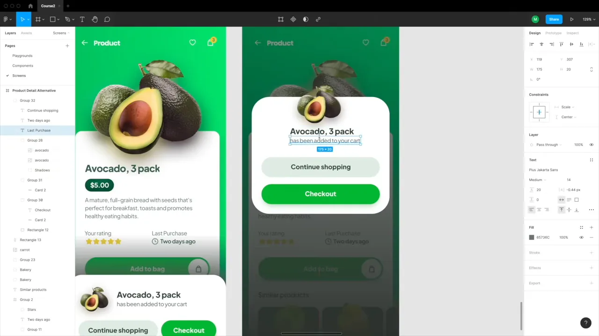
쌓은 버튼은 카드 가장자리에서 24, 버튼 사이는 16이에요. 카드 모서리 둥글기는 버튼 둥글기에 맞추되 똑같이는 하지 않아요. 대각선으로 고르게 감싸는 값을 골라야 틈이 안 생겨요. 뒤에 이미 아보카도가 있으니 팝업 속 아보카도는 돌려서 덜 겹쳐 보이게 해요.
온보딩: 가장 실험적으로 만들 수 있는 화면
온보딩은 앱을 처음 켤 때 넘겨 보는 화면들이에요. 실제로는 마찰을 더하기 때문에 최선의 소개 방법은 아니에요. 가장 좋은 건 앱을 쓰는 도중에 알려 주는 거예요. 그래도 포트폴리오에서 인기가 많고, 결제나 로그인과 달리 마음껏 실험할 수 있어서 하이 피델리티 연습에 좋아요. 발표자는 무료 3D 이미지를 끌어다 놓고 글만 쓰는 건 게으른 방법이라고 꼬집고, 이미 있는 재료로 만들어요.
- 제목은 40 크기로 크게 써요. 사람들이 빠르게 넘기니 읽히게 해야 해요.
- 글은 큰 것 하나, 작은 것 하나, 두 종류면 충분해요. 세 종류는 피해요.
- 작은 글은 쐐기 모양으로 줄을 바꿔 시선을 버튼 쪽으로 내려요.
- 버튼은 엄지가 닿는 아래에 두고, 버튼 사이 간격은 화면 가장자리까지의 거리보다 좁게 해요.
- 두 번째 버튼에는 다음 화면 내용을 알려 주는 이름('How it works')을 붙여요.
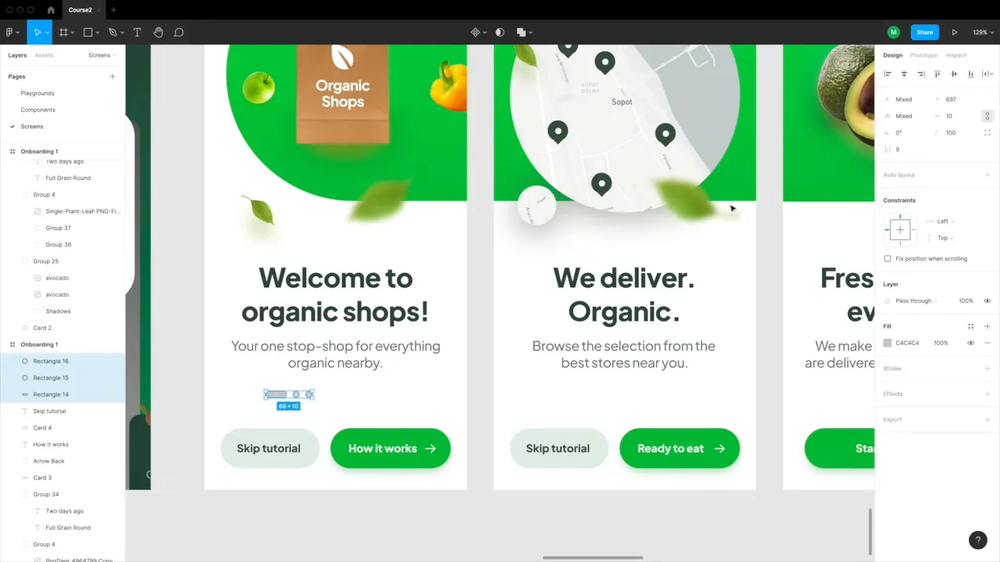
장식 객체는 화면마다 위치를 바꿔서 같은 자리에 있다는 걸 눈치채지 못하게 해요. 모두 가장자리에 겹치게 두지 말고, 일부만 겹쳐요. 문구는 대단한 카피가 아니어도 되지만 '로렘 입숨' 같은 채움 글은 쓰지 말고, 오타는 꼭 확인해요. 오타를 본 사람은 디자인 전체를 더 비판적으로 봐요. 발표자도 마지막 화면에서 오타를 냈다고 직접 털어놔요.
진행 표시는 점 세 개를 그리고 현재 칸만 길쭉하게 해요. 색은 이미 많은 초록 대신 진한 글자색을 써요. 마지막 화면에서는 '튜토리얼 건너뛰기'를 빼고 앱으로 들어가는 버튼 하나만 크게 둬요.
세 부분으로 생각하기, 그리고 이어지는 배경
온보딩 화면들을 복제해 아래 줄에 놓고, 배경 도형을 같은 각도(약 16도)로 돌려 첫 화면에서 시작해 마지막 화면까지 이어지게 해요. 넘길 때 배경이 맞물려서 포트폴리오에서 화면을 나란히 보여 줄 때 특히 좋아요. 진한 초록 대신 아주 옅은 반투명 회색(불투명도 10%) 도형으로 바꾼 판도 만들어요.
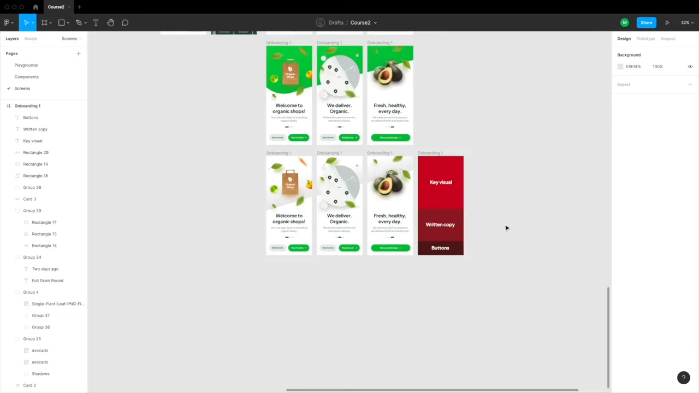
무료 3D 이미지를 키 비주얼로 쓰면 빨리 그럴듯한 화면이 나와요. 이때는 꼭 원작자를 밝혀요. 다만 온보딩 화면만 포트폴리오에 올리면 실제 프로젝트가 아니라 빠른 작업물이라는 게 티가 나요. 실제 앱의 다른 화면들과 함께 보여 줘요. 발표자는 이렇게 정리해요. 깨면 안 되는 규칙만 알고, 나머지는 창의적으로 깨도 돼요.
장식 ①: 잘라 낸 사진, 이모지, 3D, 사진 배경
발표자는 장식을 이 과정 전체에서 가장 차별화되는 부분으로 꼽아요. 장식은 사용 경험에 꼭 필요한 요소가 아니라서 접근성을 지킬 의무가 없어요. 버튼, 라벨, 폼 필드만 접근성을 지키면 장식에서는 마음껏 놀 수 있어요. 이 장은 길어서 나눠 보라고 권해요.
사진을 직접 잘라 내기
Unsplash나 Pexels 같은 무료 사이트에서 시금치 잎 사진을 가져와요. 펜 툴로 가장자리를 따라 점을 찍어요. 원본이 크면 정확하지 않아도 돼요. 나중에 작게 줄이면 작은 틈은 안 보여요. 마지막 점을 첫 점에 이어 닫고, 테두리 대신 채우기를 켠 뒤, 이 벡터를 사진 아래로 보내 마스크로 써요.
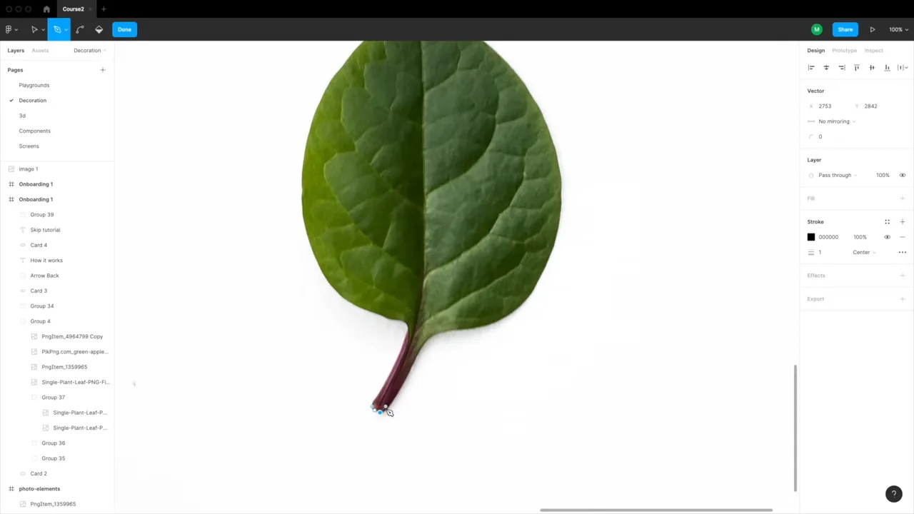
직접 자르면 언제든 확대해서 점을 고칠 수 있어요. 외부 도구로 배경을 지우면 그 이미지에 영원히 묶여요. 그래도 배경 제거 도구를 쓰기 전에 이 기법은 익혀 두라고 해요. 나중에 랜딩 페이지를 만들 때도 쓸 일이 많아요.
잘라 낸 잎은 다른 잎보다 어두워서 노출, 채도, 색온도, 하이라이트를 조정해 맞춰요. 그림자는 그룹을 복제해 큰 블러를 걸고 아래로 보내요. 가장 중요한 건 모든 그림자가 같은 광원 방향에서 와야 한다는 거예요. 왼쪽 위 잎의 그림자가 오른쪽 아래로 떨어지면, 새 잎의 그림자도 같은 방향이어야 해요. 반대쪽이면 뇌가 혼란스러워해요. 쇼핑백처럼 무언가 위에 서 있는 물체는 예외예요. 확대해서 몇 픽셀이라도 잘못 잘린 곳이 있으면 고쳐요. 의식하지 못해도 무언가 어색하다는 느낌을 줘요.
이모지에 흐린 그림자 깔기
요즘 앱에서 유행하는 이모지도 장식이 돼요. OS의 이모지 선택기로 손 흔드는 이모지를 '환영해요' 문구 위에 넣어요. 손 흔들기와 환영은 잘 어울리죠. 이모지 글자를 복제해 아래 것에 레이어 블러 20을 걸고 조금 내리면, 흰 배경에서 이모지가 바로 살아나요.
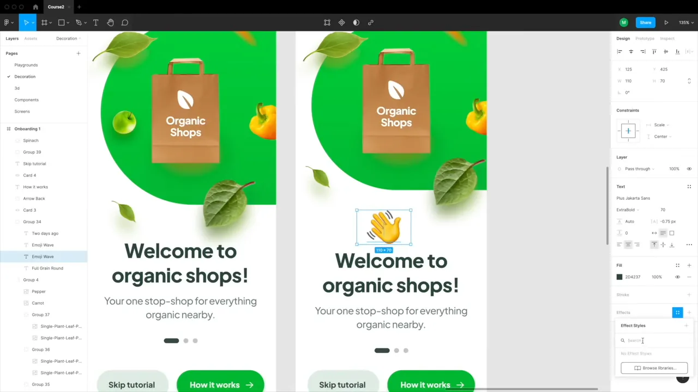
다른 브랜드로 바꿔 보기: 게임 가게와 3D 이미지
패턴을 보여 주려고 이 화면 하나만 게임 가게로 바꿔요. 채소와 잎을 지우고 배경을 아주 어두운 보라로, 위쪽 도형도 비슷한 색조로 바꿔요. 글자 색조도 그쪽으로 옮겨 밝게 하고, 문구도 꼭 바꿔요. 게임 옆에 '유기농'이라고 쓰여 있으면 우스워요. 주 버튼은 배경과 다른 파랑으로 해야 어두운 바탕에서 눈에 띄어요. 복제한 화면은 그림자 색이 예전 색을 품고 있지 않은지 꼭 확인해요.
도형은 모서리를 없애고 돌리고, 가는 선 몇 개를 더해 '게임다운' 배경을 만들어요. 3D 이미지는 무료 3D 일러스트 라이브러리(여기서는 Khagwal 3D)에서 가져와요. 여러 개를 쓸 때는 같은 각도로 렌더링된 것만 고르고, 하이라이트 위치가 맞게 해서 광원을 하나로 맞춰요.
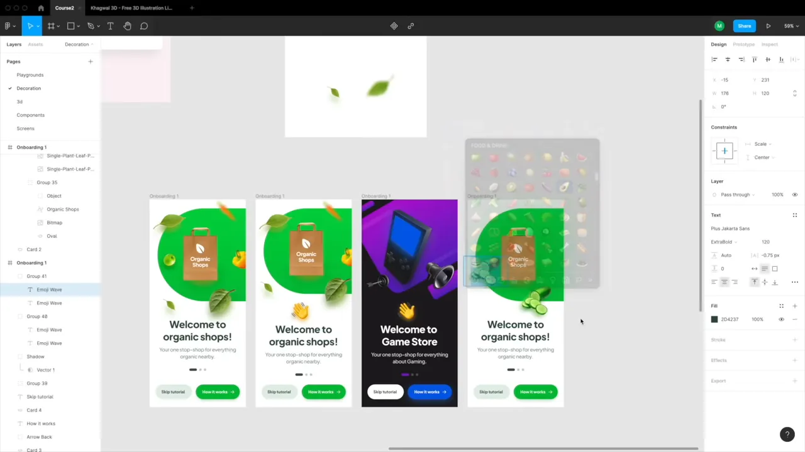
채소 이모지 장식은 오이, 아보카도, 고추, 옥수수 네 개로 만들어요. 각 이모지 아래에 같은 이모지를 흐리게 깔면 고추 밑에는 빨간 그림자, 오이 밑에는 초록 그림자가 생겨요. 크기와 높이는 일부러 다르게 해서 반쯤 무작위처럼 보이게 하되, 빈 곳이 너무 생기지 않게 고르게 흩어요. 그림자를 물체에서 더 멀리 두면 더 높이 떠 보여요. 빨강과 초록은 보통 같이 쓰지 말라고 하면서도, 이모지라면 괜찮다고 해요.
복잡한 사진은 마스크 안에 가둬요
회원가입 화면에 채소 사진을 넣을 때 가장 흔한 방법은 화면 전체 배경에 깔고 불투명도를 낮추는 거예요. 하지만 이렇게 복잡한 사진은 어느 불투명도에서든 복잡함만 더해요. 사진을 보이게 하면 글자 대비가 무너져요.
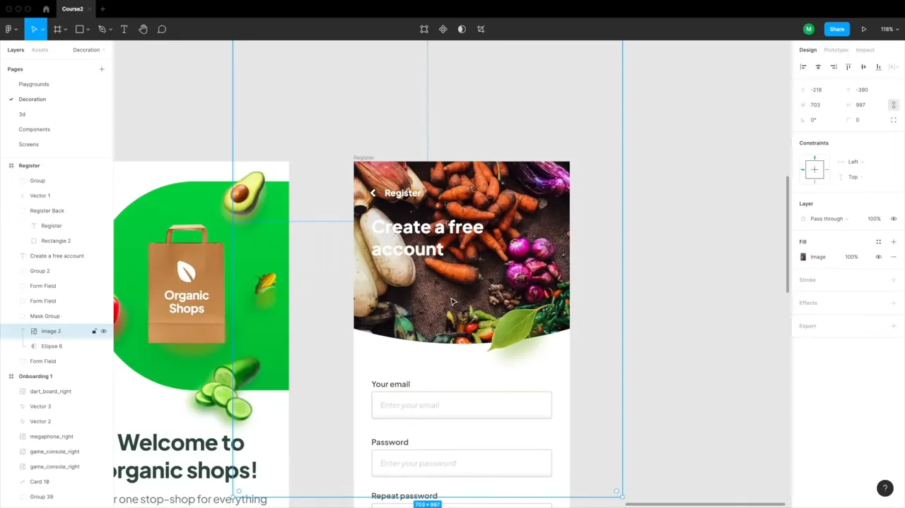
대비 문제는 앞에서 만든 '사라지는 그라디언트 덮개'를 마스크 안에 붙여서 풀어요. 덮개가 빨리 사라지게 조정하면 사진 일부는 그대로 보여요. 큰 제목에만 아주 옅은 그림자를 더하고, 뒤로 가기 화살표나 작은 글자에는 그림자를 주지 않아요. 잎을 하나 더 붙이고 싶어도 참아요. 사진이 이미 시각적으로 무거우면 덧붙인 요소가 과해 보여요. 폼이 왼쪽 정렬이라면 빈 공간은 오른쪽에 두는 게 F자 시선 흐름에 맞아요.
장식 ②: 글래스모피즘, 도형, 뉴모피즘, 오로라
글래스모피즘
연습판에서 이너 섀도로 만든 반짝이는 공을 가져와 초록 원 배경 주변에 네 개쯤 흩어요. 일부러 놓은 것처럼 보이지 않고 공중에 떠 있는 것처럼 보여야 해요. 두 개는 초록 원 아래, 두 개는 위에 둬요. 위에 있는 공에 글래스모피즘을 걸어요.
- 레이어 불투명도는 100%로 두고 채우기만 60%로 낮춰요
- 효과에서 배경 블러를 걸고 값을 조정해요 공 뒤로 지나가는 초록 원 가장자리가 뿌옇게 비쳐요
- 그림자는 배경 색에서 밝기 10을 내린 타원에 레이어 블러를 걸어 공 아래에 깔아요 — 아주 살짝만, 거의 무의식적으로 느낄 정도로요.
이 효과는 밝은 바탕 위 밝은 색에서 가장 잘 먹지만, 흰 바탕 위 반투명 초록도 괜찮아요. 어두운 판에서는 배경을 거의 검정에 가까운 어두운 초록 회색으로 바꾸고, 글자는 흰색으로, 작은 글은 불투명도만 낮춰 배경에 맞춰요.
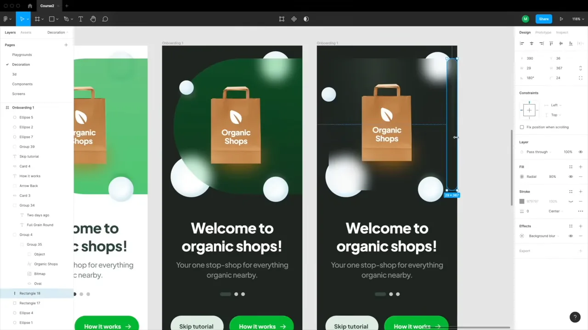
다음 판은 다크 모드의 '진짜' 글래스 카드예요. 카드 그라디언트를 방사형으로 바꾸고, 안쪽은 조금 밝고 불투명하게, 가장자리는 조금 어둡고 투명하게 해요. 다크 모드에서는 그림자가 쓸데없이 복잡함만 더하니 빼요. 카드 하나를 화면 오른쪽 끝에 잘린 채 하나 더 두면 옆으로 넘길 수 있다는 신호가 돼요. 배경 블러 객체가 화면 밖으로 삐져나가면 가장자리에 하얀 선이 생기니, 남은 화면 크기에 딱 맞춰 잘라 둬요.
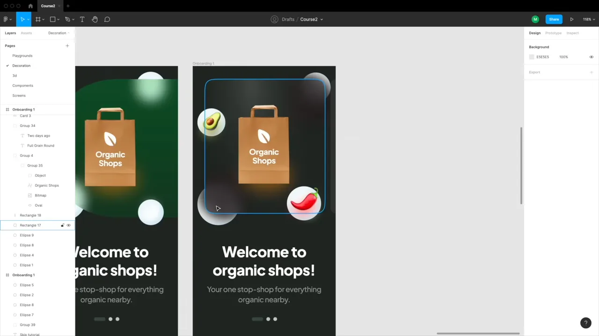
하나가 겹치면 다른 하나는 겹치지 않게 해요. 너무 똑같거나 미리 만든 것처럼 보이면 지루해 보인다고 해요. 카드에 1pt 안쪽 테두리를 주고 불투명도를 낮추거나, 위는 흰색에서 아래는 투명으로 사라지는 테두리를 주면 가장자리가 확 달라 보여요.
가장 단순한 도형들
원, 사각형, 둥근 사각형, 삼각형을 흰색으로 만들어 비슷한 크기로 맞추고 그림자를 줘요. 흰 바탕에 흰 도형이 그림자를 드리울 때는 초록 기운이 조금만 있어도 어색해 보여요. 이때는 그림자 채도를 완전히 빼서 회색으로 하고 블러를 키워요. 검은 바탕의 검은 도형도 마찬가지예요.
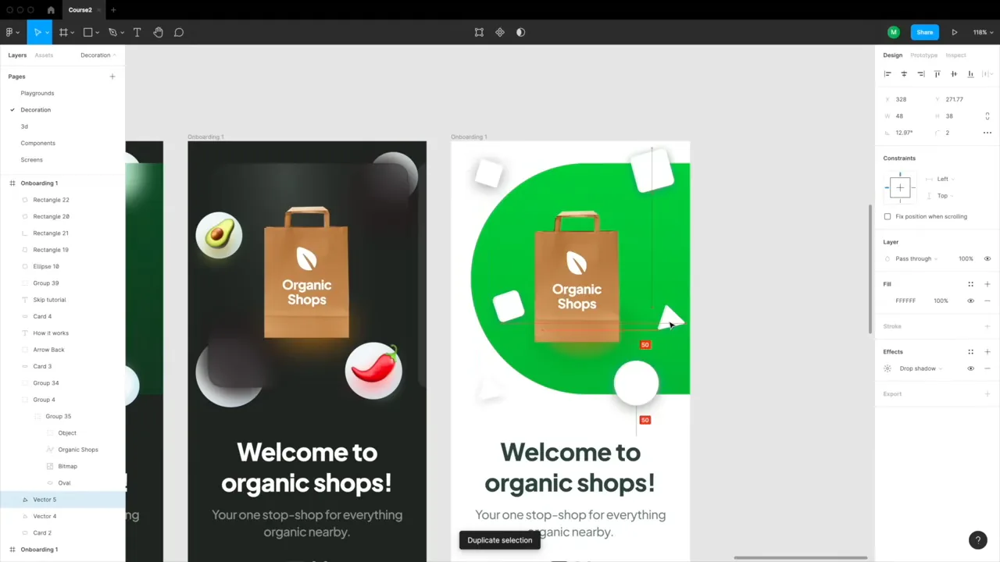
배경 도형도 꼭 알약 모양일 필요는 없어요. 요즘 앱은 화면 폭 전체를 덮고 아래쪽만 둥근 도형을 많이 써요. 둥글기를 시안에 넣을 휴대폰 목업의 모서리와 맞추면 보기 좋아요. 반대로 글 뒤에만 옅은 배경을 두고 사진 뒤는 흰색으로 남기는 판도 만들어요.
뉴모피즘은 장식에만
발표자는 이제 "완전히 미친" 시도를 해 보자며 뉴모피즘을 꺼내요. 접근성이 나쁘다는 지적은 맞지만, 장식에만 쓰면 상관없다고 해요. 뉴모피즘은 흰 그림자와 어두운 그림자가 다 보여야 해서 배경을 흰색이나 검정이 아닌 옅은 초록 회색으로 바꿔요.
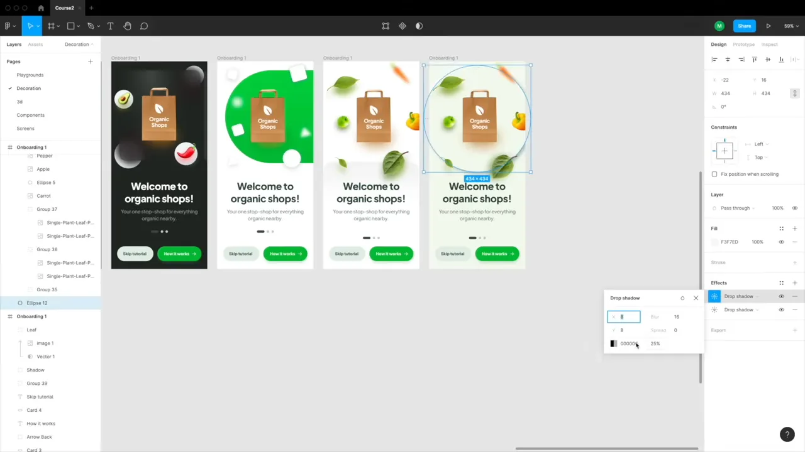
그리고 "논란이 될" 일을 해요. 같은 스타일을 보조 버튼에 붙여요. 버튼 테두리는 거의 안 보이지만, 버튼 글자가 배경에 비해 충분히 진해서 테두리를 못 보는 사람에게도 글자 링크로 읽힌다는 논리예요. 발표자는 뉴모피즘의 문제가 화면의 모든 요소에 이 효과를 쓴 데 있었다고 봐요. 금지된 스타일은 없고, 장식이나 이미 접근성이 확보된 덜 중요한 요소에는 쓸 자리가 있다고 말해요.
오로라 배경
마지막 판은 오로라 배경이에요. 보조 버튼 배경에서 찍은 아주 옅은 색으로 원을 만들어 레이어 블러 100을 걸고, 레이어 맨 아래로 보내요. 원을 복제해 오른쪽과 가운데에 두고 색을 바꿔요. 파랑과 초록처럼 다른 색을 섞을 수도 있지만, 앱 색이 분명하면 비슷한 계열로 맞춰요. 화면에 주황 당근이 있다면 한 원을 노랑 쪽으로 옮겨 어울리게 해요.
원들은 크기와 위치를 조금씩 다르게 해서 유기적으로 보이게 하고, 반드시 서로 겹쳐야 해요. 겹치지 않으면 색이 섞이는 전환이 생기지 않아요. 오로라는 온보딩뿐 아니라 카드 목록 뒤처럼 앱 안의 다른 화면에도 쓸 수 있어요. 마지막 장에서 상세 화면에도 이 배경을 옮겨 써요.
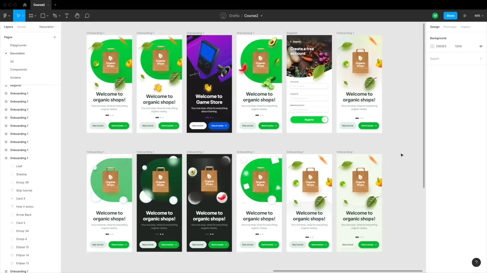
한 스타일이 마음에 들어도 거기에 갇히지 말라고 해요. 다크 모드 앱, 글래스모피즘 앱, 뉴모피즘 앱을 연습 삼아 만들어 보면, 결국 이 기법들을 섞어 자기만의 것을 만들 수 있어요.
마무리: 대비 검사와 일관성
대비 검사 플러그인으로 'AA' 맞추기
마지막으로 접근성을 확인해요. 피그마 플러그인에서 'contrast'를 검색해 대비 검사 도구를 설치해요. 발표자는 마이크로소프트 것을 포함해 두 개를 깔아요. 헥스 코드 두 개를 붙여 넣는 무료 웹 도구도 똑같이 쓸 수 있어요.
목표는 'AA'예요. 모든 요소를 'AAA'까지 올릴 필요는 없어요. 대부분의 OS에 전체 대비를 높이는 설정이 있어서, 더 높은 대비가 필요한 사람은 그렇게 맞춰 쓸 수 있다고 봐요. 검사해 보니 초록 버튼이 'AA'도 통과하지 못해요.
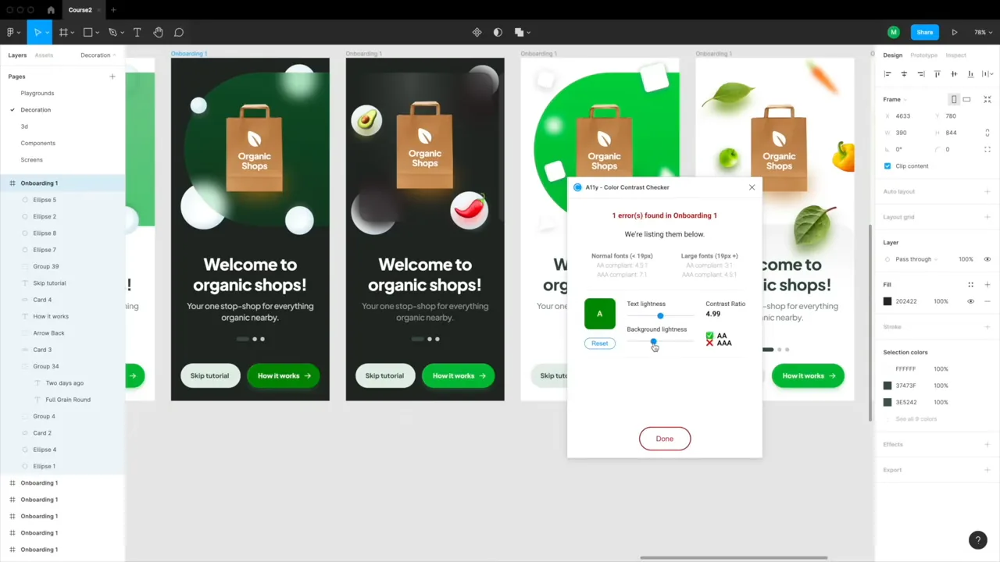
이렇게 검사할 대상은 버튼, 앱의 본문 글자, 폼 필드처럼 사람이 실제로 쓰는 요소뿐이에요. 카드 배경이나 장식은 검사하지 않아도 돼요. 강좌 처음에 세운 규칙으로 돌아오는 셈이에요.
빠르게 만든 만큼 일관성을 다시 맞춰요
하이 피델리티 작업은 아이디어가 떠오를 때 빨리 움직이는 탐색이라 화면마다 어긋나는 곳이 생겨요. 어떤 화면엔 뒤로 가기 화살표가 없고, 붙여 넣은 아이콘은 너무 굵고 색도 다 달라요. 아이콘 선 굵기와 색, 비슷한 요소의 모서리 둥글기, 대비를 모든 화면에서 맞춰요. 컴포넌트를 쓸 줄 알면 그걸로 하고, 초보라면 속성 복사·붙여넣기로 하나하나 확인하는 게 오히려 좋아요. 모든 걸 손으로 점검하는 습관이 들어요.
피드백을 받으려면 서로 완전히 다른 화면을 최소 여섯 개 준비해요. 온보딩 두 판 같은 변형이 아니라, 가장 좋은 판 하나씩에 장바구니 같은 다른 화면을 더해요. 포트폴리오에 쓸 거라면 여섯 개보다 훨씬 많이 만들어요.
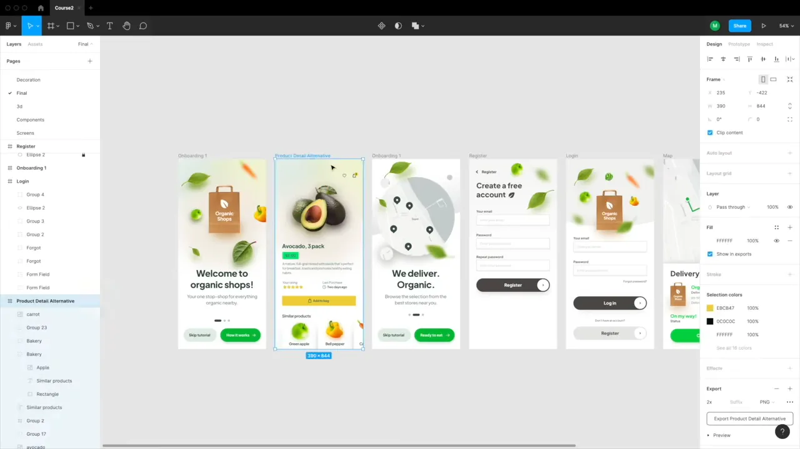
상세 화면의 가격표는 접근성 검사에서 걸려서 고쳐야 한다고 짚어요. 모든 화면에 떠 있는 이미지나 도형, 3D 객체를 넣을 필요는 없다는 게 마지막 당부예요. 강좌는 이렇게 끝나요. 기초와 도구는 줬으니, 이제 여러 곳에서 영감을 얻고 프로젝트마다 자기만의 스타일을 만드는 건 각자의 몫이에요. 그리고 하이 피델리티 UI 디자인은 자기 작업을 파는 데 매우 중요하다고 덧붙여요.